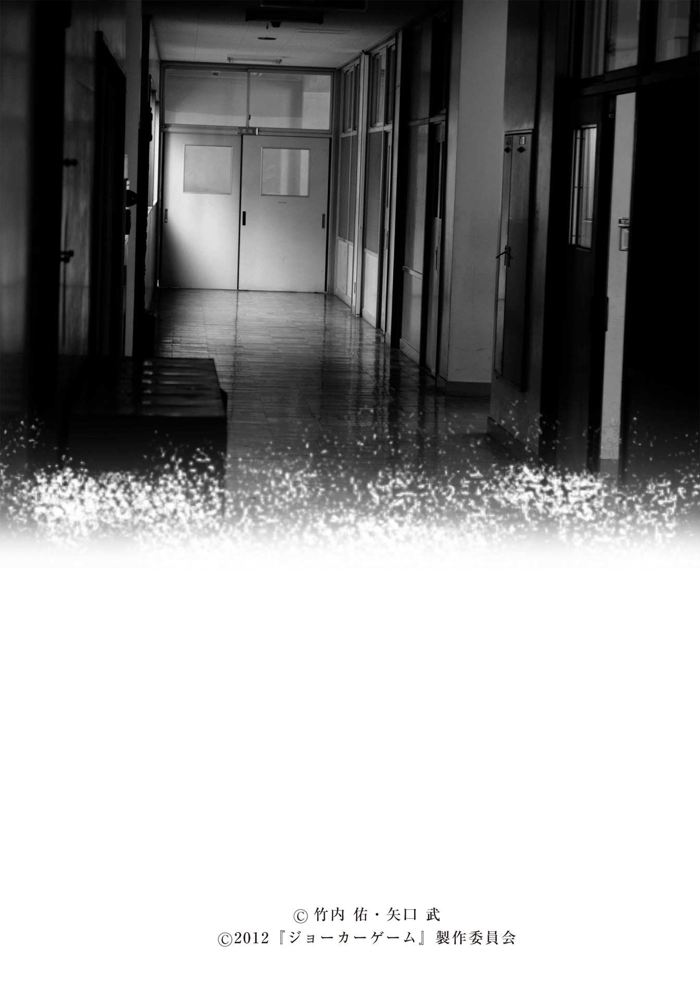
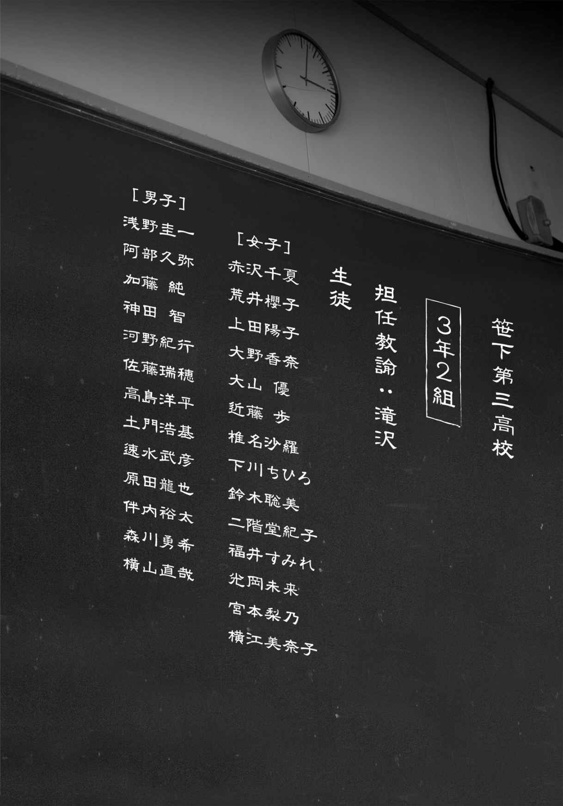
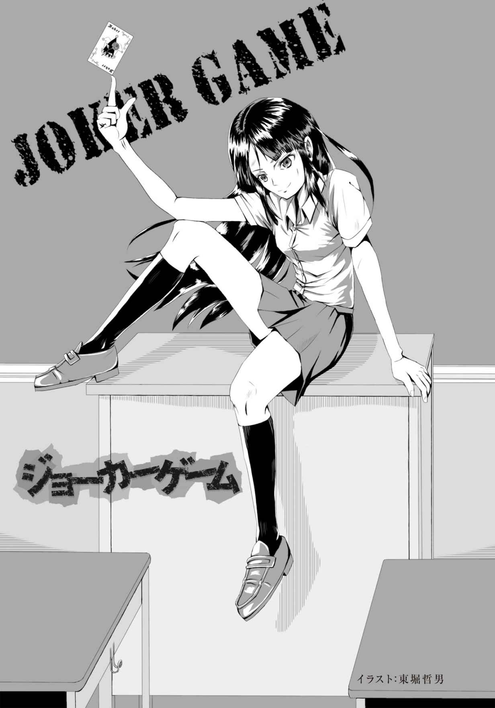
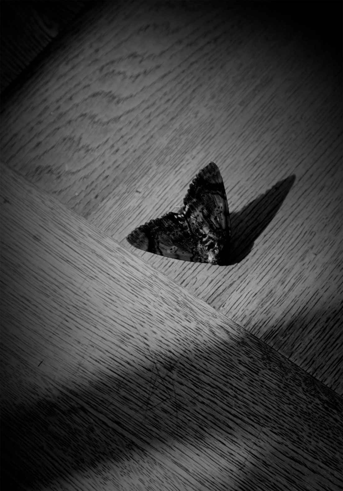
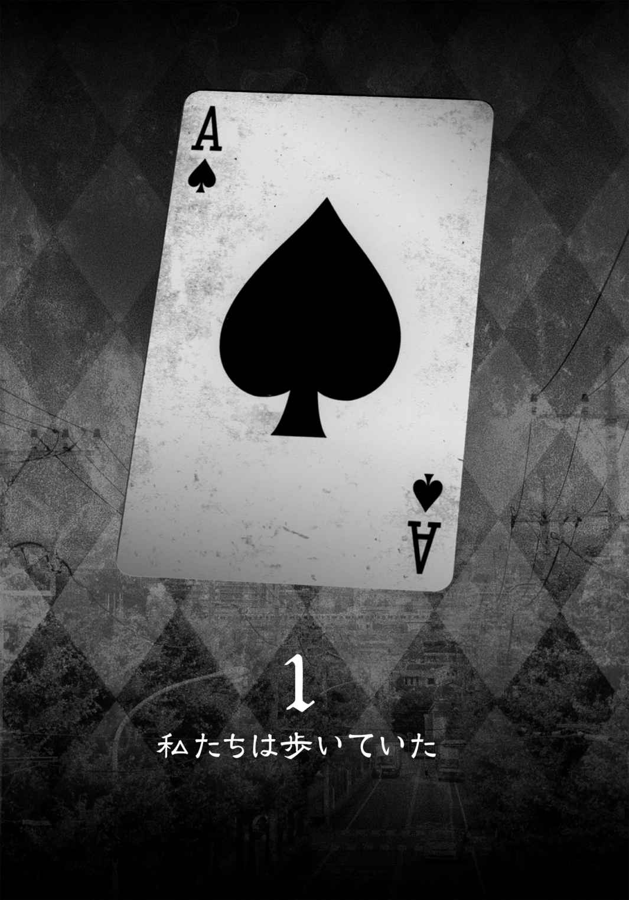
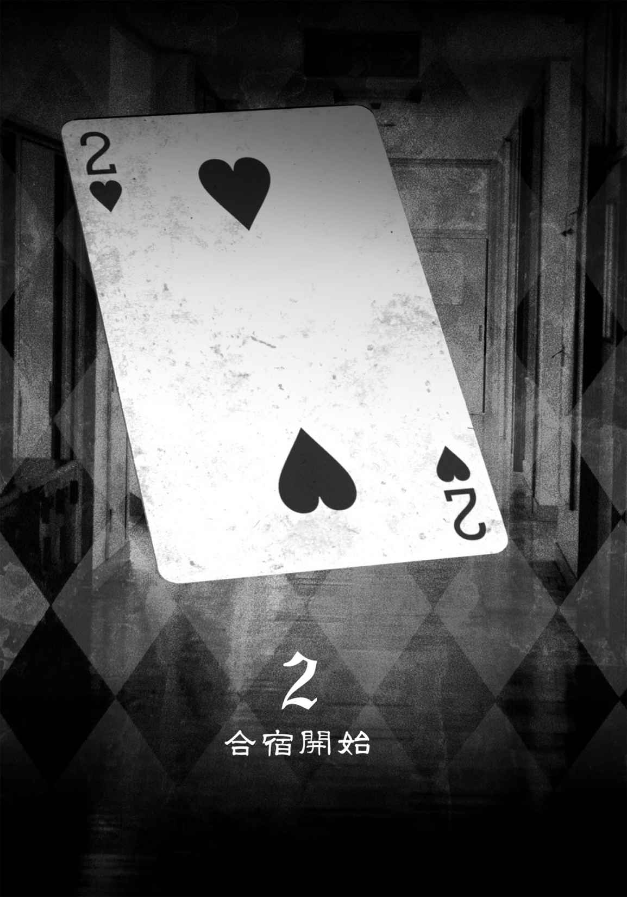
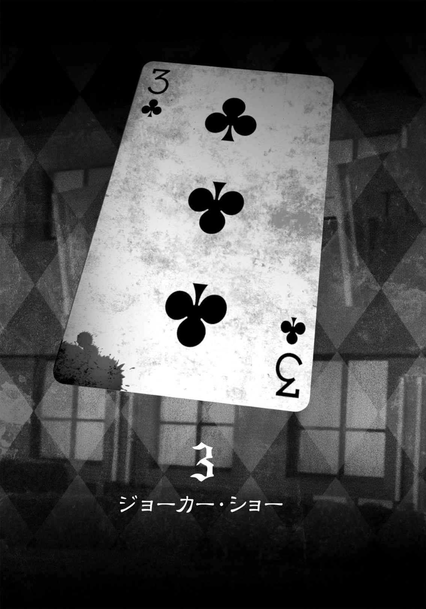
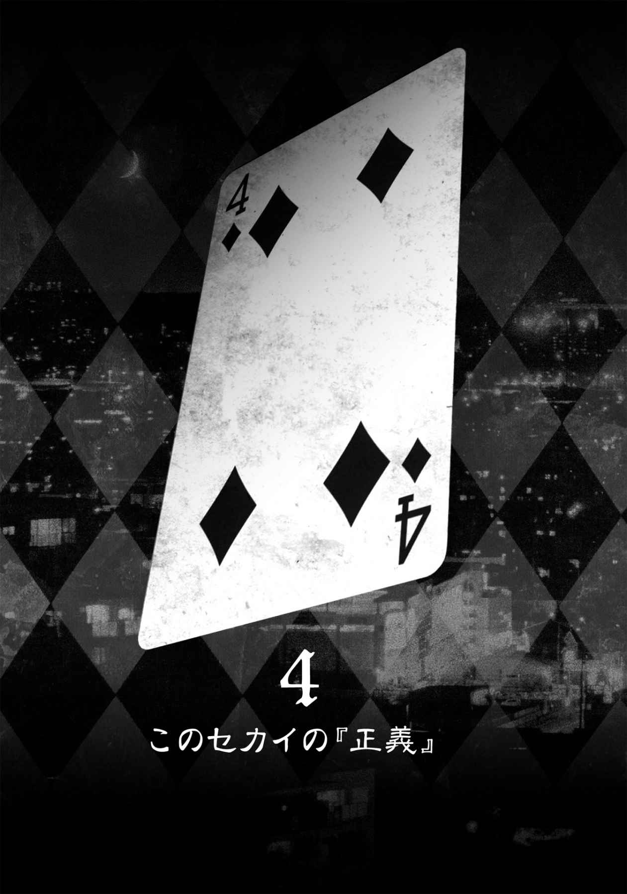
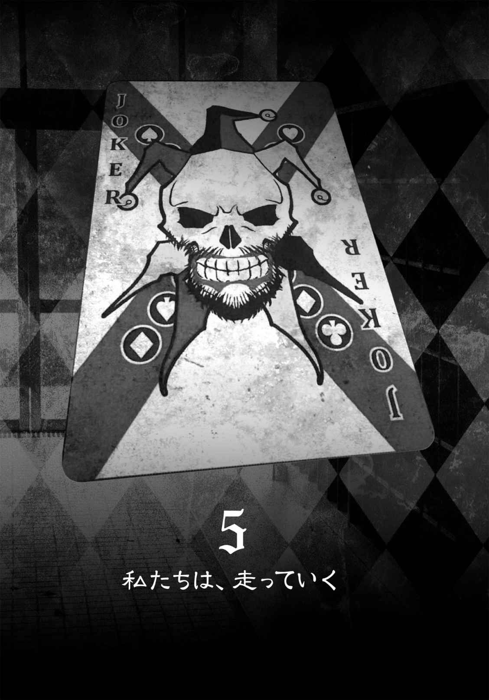

| JOKER GAME (竹書房文庫) | |
| 矢口武 & 竹内佑 | |
| (2012) | |



文 科 省認可 教育強化プロジェクト 第五試験
笹 下 第三高等学校専用プログラム
『ババヌキ』
【基本ルール】
＊配られたカードの交換はいつでも、誰とでも、何度でも可能。
＊カードが揃 ったら提出し、手持ちからなくす。
＊手持ちのカードをすべてなくせば、クリアとなる。
＊制限時間内であれば、校舎内の移動は自由。
しかし、基本的にゲームは教室内で行うこと。
【契約システム】
＊ゲームのクリア方法として、「手持ちのカードをすべてペアにして担任の先生に渡す」方法の他に、『契約システム』を使用する方法がある。
＊『契約システム』とは、手持ちのカードをすべて他のプレイヤーに委託することで、手札をすべてなくすことである。カードを委託できたプレイヤーは、その時点でクリアとなる。
＊『契約システム』の成立には、担任の先生の立会いの下、両者の合意を必要とする。
＊委託されたプレイヤーへのボーナス。
・委託された人数に応じて、政府から奨学金が与えられる。
・七名以上と契約を結ぶことができたプレイヤーは、残りのゲームをすべて免除され、希望する大学への推薦入学が確約される。
【敗北条件】
＊一枚だけ存在するジョーカーを、最後まで持っていた場合。
＊『契約システム』を利用して委託していたプレイヤーが、敗北した場合。
この場合、『契約』を結んでいたすべてのプレイヤーは連帯責任となり、全員敗北となる。
【失格条件】
＊朝九時のカード配布時に遅刻した場合、十八時半の終了までに教室に入らなかった場合。
＊カードを不正に廃棄するなどの違反行為が認められた場合。
【最後に】
＊ゲームは一日一回のみ。
＊カードは毎日厳密にチェックされ、次の日には新しく配布される。
それでは皆さん、正々堂々と、楽しくはつらつとゲームをエンジョイしましょう。
レッツプレイ！


真夏の日差しが、今日も街に降り注ぐ。
七月も四週目、学生たちはいよいよ夏休み。
しかし、赤 沢 千 夏 は今日も高校へ向かっていた。
断じて補習組ではない。
よく「千夏って、いつものんびりしているね」だとか「ストレスなさそうだね」とかなんにも考えてないふうに言われるが、これでも成績は悪くない方である。平均点と最高点の真ん中を取るくらいには、勉強ができる方だと自負している。
本日、登校する理由。
それは、待ちに待った夏合宿だからだ。
鼻歌も、いつもと同じ道も、なんだかすべてが喜んでいるような、そんな気がして足が軽くなる。
天気は快晴。
草木はのびのび緑色。
千夏も大きく伸びをする。
肩からずり落ちてきた旅行用のカバンを、担ぎなおす。
なにせ四日分の荷物だ。厳選に厳選を重ねても、かなり重い。
千夏は額の汗を拭いつつ、足を速めた。
千夏は日陰を選べば、心地よい風が、緑を揺らす。
スカートから、襟から流れて、体を冷まして抜けて行く。
泊まるところは冷房がきちんと利いているところがいいな、と思う。
海の近くか、川のある山。
あくまで希望だけれども。
こんな時期に生徒を集めてどこかに行く、というのだから、さ。
「そういえば」
千夏はクラスメイトが変なことを言っていたのを思い出した。
去年まではこんな時期に、夏合宿なんかはなかったらしい。
だが、今年はなぜか特別に、夏合宿が設定されたそうだ。
しかも、千夏たちのクラスだけ。
クラスがなにか表彰されるようなことでもしたのだろうか？
それとも逆に、問題点が多すぎたのだろうか。
でも、クラスの噂 なんか千夏はどちらでもいいような気がしていた。学校には学校の考えがあるんだろう。
とりあえず、どこかに泊まりがけで行く、というだけで、ドキドキワクワクが止まらない。今日だって、朝早くに目が覚めてしまったのだから。
はやる気持ちを抑えて、千夏は大通りを歩く。歩道橋を渡る。
その途中、千夏は向かい側の歩道に、やっぱり大荷物の男子生徒を見つけた。
クラスメイトの横 山 だ。
女子よりも非力、とよく笑われている彼だが、上から見下ろしてみると体の小ささがとてもよくわかる。今も旅行カバンの方が大きく見えて、あっちにフラフラ、こっちにフラフラと危なっかしい。
と突然、横山がその場で盛大に尻もちをついた。
転んだのではない。突き飛ばされたのだ。
「うぃー、横山ー！」
横の道から、ぞろぞろと男子が現れる。その先頭にいるのは神 田 だ。タチの悪いガキ大将が高校生になっただけみたいな、クラスの男子のリーダー気取り。
神田は、サラサラの茶髪に手 櫛 を入れながら、悠々とした足取りで倒れている横山の前に立った。
「おいおい、吹っ飛んでんなよ、わざとらしーなー」
「い、いきなりは、ふっとぶよ、うん」
「ちょっと挨拶しただけだろうが、なぁ」
「挨拶は、その、声で言って......欲しい、かな」
「あぁ？ 俺たちの挨拶をバカにすんのか？ なめーきー」
「え、う、うん......ごめん」
神田が横山に向かって、右手を突き出した。
「ひっ！」
横山はとっさに顔を庇 った。
だが、神田の手は害意のあるグーではなく、温情のあるパーだった。
「おいおい、ビビんなよ。ほら、立てって」
横山がキョドキョドしながらも、差し出された手を摑 む。
すると神田は、横山の摑んだ手を無茶な力で引っ張り上げた。
「お前みたいに傲慢なヤツは、これです」
同時に、横山の右肩へと思いっきり拳を突き当て、同時に摑んでいた手を離す。
「うぇーい、肩パーン！」
「いてーーっ！」
横山が再び歩道に倒れこむ。足をジタバタとさせて、必死に痛みに耐えているようだった。
「おいおい、リアクション激しすぎだろ。わざとらしい」
神田たちは、のたうちまわっている横山を見下ろしながら、声を出して笑う。
「なぁなぁ、肩パンってそんなに痛いか」
「俺のが特別かもな。浅 野 もやってみるか？ 軽くだぜ軽く。肩の、こことここの間を、軽ーく殴るんだ」
「おっけ」
いつも神田とつるんでいる浅野は、男子のナンバーツー。最近も街中でスカウトにあった、という噂が立ったほど後輩の女子たちにも人気がある。だが、千夏はあまり好きではない。友達内での評判も悪い。
「ほら、横山。立てよ」
今度は浅野が横山の手を取り、立ち上がらせる。
横山もさすがに二回目は警戒して、右肩を必死に押さえていた。
「おいおい、そこ押さえちゃったら、殴れないだろ」
「いや、でも......」
「からの逆肩パンチ！」
「いっってーーーっ!! 」
横山はまたまた、歩道で悶 える羽目になった。人目もかまわず、肩を抱えたままうずくまり、背中を震わせていた。
「おい、軽くだったぜ？ いま。なあ」
浅野が、軽く拳を振るう真似をし、周囲はゲラゲラと笑う。
「おーい、横山くん、ごめん。ほら、早く行こうぜ」
「バスの時間に遅れたら、まじぃだろ」
神田たちの言葉に、横山はようやく動き出した。目元を手で拭って、よろよろと立ち上がる。
その肩に、旅行カバンがかけられた。
「そういうわけで、荷物よろしくー」
「俺のもよろしくー」
「やったね、これで痛くない筋肉付くぜェ」
よろける横山の膝を後ろからひと蹴りした浅野が、突っ伏した横山を軽く飛び越えた。そんな横山の上に、次々バッグが重ねられた。
「おいおい、横山。死ぬなー」
「そうだぞ、お楽しみはこれからだ」
「どうせなら、合宿所までランニングするかー。あははー」
千夏は、それ以上は見ていられなかった。
歩道橋の階段を足早に降りると、男子たちとは視線を合わせずに通り過ぎた。
せっかくの気持ちのいい朝だったのに。
そして、いつものことだけど、見なかったことにしてしまう自分が嫌になる。
思わず、ため息をついた。
「だからー、ネクタイ曲がってんでしょ？」
そんな時、千夏の耳に聞きなれた声が入ってきた。
目を上げると、旅行カバンを持った男子と女子が、一緒に歩いている。
千夏はすぐに気を取り直した。
「おはよー、美 奈 子 。高 島 くん」
千夏は手を振った。女子が振り返る。千夏と目が合った瞬間、彼女は「おはよー」と声と手を躍らせる。
千夏にとってクラス一番の親友、横 江 美奈子だ。
ボーイッシュなショートカット。彼女の笑顔は、見ているこっちも気持ちよくなってしまうほどに、清 々 しい。
千夏が二人に追いついたのは、美奈子が隣の彼のネクタイに手を伸ばした時だった。
「だから、曲がってるんだって」
「いいって」
世話焼きの美奈子らしくて、千夏は思わず笑ってしまう。
「ほら、襟も立ってるし」
美奈子による校門前での服装チェックは、いつも細かい。
高島は面倒くさそうに顔を歪 めるものの、振り払うことはしない。
千夏が美奈子と知り合う以前から、二人はこんな関係らしい。
千夏の見立てでは、ちょっと美奈子が押しすぎなんじゃないかな、と思っている。今朝だって、高島はかなり恥ずかしそうで迷惑がっている。内心は知らないが。
「おいおい、高島ぁ。またママに面倒見てもらってんの？」
「さすが、おぼっちゃんは違うねぇ」
千夏たちの背後から声がした。
振り向かなくても、声の主はわかる。神田グループだ。
嫌々振り向くと、神田たちは全員、小馬鹿にするようににやにやと笑っている。その後ろに荷物にうもれた横山の姿が見えて、千夏はちょっと気分が悪くなった。
「あ、俺たちのことは気にすんなよ。もっとママに甘えていていいんだぜ？」
「あんたら、うるさいよ」
意外なことに、神田たち相手でも美奈子は物 怖 じしなかった。刺 のある声と共に、彼らの前に立ちふさがる。
「おー、こえーこえー」
「ママ、ごめーんねー」
当てこすりに笑いあうと、神田は横山の頭を叩 くのだった。
「おい横山、ママに言い返せよ。おい」
「え？ うん......あ、あはは」
「なんだよ、それ！」
「ちょっと！ 横山くん、かわいそうじゃない」
「えっ、かわいそう？ じゃれあってんだよ、俺たち。なあ？」
「え、あ、うん」
神田に肩を組まれて、横山は弱々しく頷 く。
「ほらな。仲良しだよ、ママ」
「なにが、ほらな、よ。そうやって、無理やり従わせて、恥ずかしくないの？」
「ママに面倒見てもらう男よりは、恥ずかしくねぇよ」
ぎゃははは、と取り巻きが一斉に笑う。
「お、そうだ高島ぁ。お前、横山の荷物持ってやれよ。お前ら仲いいじゃん」
神田がにやにやしたまま、横山を押しやった。
だが高島は横山も美奈子も無視して、さっさと歩き出す。
「千夏も、早く行こ」
その背中を、美奈子が追う。千夏も続く。
「おい、無視すんなよ、高島ー」
「恥ずかしがらなくてもいいんだぞー」
千夏はハラハラしながら美奈子たちを見ていたが、二人は何事もなかったかのように歩いていく。かまえば余計につけあがる、と感じているのかもしれない。
実際、ヤジもすぐに聞こえなくなった。
「はー、楽しみだよねぇ。向こう行って、何するんだっけ？」
「美奈子、旅のしおり、読んでないの？」
「えー知らないよー私。文字が多いもの読むと、眠くなっちゃって」
「文字が、多い......？」
千夏はカバンから、旅のしおりを取り出す。オレンジ色の紙に印刷された手作り小冊子だ。内容は、今日からの合宿の流れとか、合宿の主旨とか、注意点とか。
どう見ても文字の割合は少ない。
イラストとか入っているし。
「あ、旅のしおりってそれ？ 見せて見せて」
美奈子が、千夏の手からしおりを取り上げる。
「へー、こんなこと書いてあるんだ。わ、部屋割りなんて初めて知った」
「美奈子、もしかして旅のしおり失 くしたの？」
「いやぁ、そもそも受け取ったかなぁ──げ」
ペラペラとしおりをめくっていた美奈子の手が、ぴたりと止まった。
「どうしたの？」
「私と相部屋の人」
「うん。私と美奈子一緒だよ！」
「それは嬉 しいんだけど、上 田 と同じ部屋だよ。最悪」
美奈子は舌を出して、眉をひそめる。千夏はその様子を、苦笑いで眺めていた。
「もう一人はえっと......大 野 さんか。千夏、大野さんとしゃべったことある？ 私、まだないんだよね」
「少しは話したことあるよ。でも、仕方ないよ。大野さんが転校してきたのって、四日前だし」
「うーん。今回の合宿で、仲良くなれたらいいね」
「そうだね。合宿、楽しみ──」
立ち止まってしおりを覗 き込む千夏たちと高島の距離がどんどんと遠くなっていく。
「ちょっと高島、待ってよー」
その背を、美奈子が慌てて追いかけていった。
「たかしまぁ～、まってよぉ～」
後ろからは、ゲラゲラと笑う神田グループの声。
千夏は大きくため息をつく。
「......楽しみ、だよね」
自分に言い聞かせるように、もう一度つぶやいた。
＊
日付は一ヵ月ほど遡 る。
赤々とした夕日が深く差し込む笹下第三高校の会議室は、重苦しいほどの空気に満ちていた。長机に揃 った三年生の担任教員をはじめとして、校長、教頭、生徒指導担当と、難しい顔がズラリと並んで押し黙っている。
「では、失礼します」
一人の女性教員が立ち上がる。
彼女の前にある紙のケース。『文科省』と書かれた帯封が付いている。
封を切り、カードの束を取り出した女性教員はゆっくりと、それらのシャッフルを始める。
紙と紙とが擦 れる音。
睨 むように手元を見る者、うつむく者、校長の顔を伺う者。緊張した空気のせいか薄笑いが止まらない者。
緊張感は、徐々に増していく。
ごほん、と校長が、咳 払 いでみんなの目を引き寄せた。
「えー、来月から、特別合宿期間が始まります。担任の先生方は、安全第一を心がけ、生徒たちにしっかりと学ばせてください」
女性教員が、カードのシャッフルを止め、歩き始める。
着席する他の教員たちの隣に立ち、一枚ずつカードを引かせていく。
上からめくる者。間から抜く者。選び方は様々だったが、全員が引いたカードを机に伏せ、見ないままでいた。
「今、若者に必要なのは、コミュニケーション能力の向上、そして社会に適応していくための能力形成の強化です」
座っていた教員たちが、神妙に頷く。
校長の声が一層大きくなる。
「我が国の平均学力は、ついに先進国の中では最下位になりました。大人が子供たちを甘やかしてきた結果なのです」
全員がカードを引き終えた。
女性教員は続いて校長の背後のホワイトボードの前に立ち、大きく文字を書いていく。
『文科省認可 教育強化プログラム特別合宿 笹下第三高等学校参加 第一日程／７月23 日～26 日施行』
「生徒たちには今回の合宿で、人と人との絆 の大切さ、他人の気持ちを思いやることがいかに大切か、ということを学んでもらいたい」
自分の言葉に興奮したのか、沈黙からの解放感か、校長はついには立ち上がった。
「この学校から、次世代の日本を担う新しいリーダーになるような人物が、登場する。それが、今回のこの合宿を行うことにより叶 うかもしれません。そして、この学校がそのテストケースに選ばれたのは、誠に名誉なことであります。先生方も、厳粛な気持ちで、業務の遂行に取り組んでいただきたいと思います」
拍手が沸き起こった。
校長は紅潮した顔で席に着く。
「ありがとうございます、それでは、カードをめくってください」
再び、ピン、と空気が張り詰めた。
教員たちは互いの様子を窺 いながら、伏せていたカードをめくる。
会議室にあふれる、悲喜交 々 の声。
その様子を見渡しながら、女性教員が口を開いた。
「第一日程、一番目を引いたのは何組でしょうか？」
しんと、場が静まり返る。
「私です」
それを破ったのは、一人の男性教員。
挙がった手に、すべての目が集まる。
ハートのＡ。
「滝 沢 先生ですか」
校長の口元が満足げにほころんだ。
「よろしく頼みましたよ。合宿を終えたあと、滝沢先生のクラスの生徒が、より素晴らしい人間へと成長できているように......」
「はい。おまかせください」
女性教員が見届けた結果をホワイトボードに付け加えた。
治験クラス『３年２組』。
『文科省認可 教育強化プログラム特別合宿 笹下第三高等学校参加 第一日程／７月23 日～26 日施行 ３年２組』
校長はホワイトボードを眺めてから、再び会議室を見渡した。
「さて、二番目のクラスは──」

千夏たち、３年２組の生徒を乗せたマイクロバスは、深い森の中でエンジンを止めた。
バスから降りた生徒たちは、自然の空気を大きく吸い込んだり、ヤッホーと叫んだり。
窮屈な場所から抜け出した解放感に浸っていた。
千夏も木々の間からすり抜けてくる風を受けて、はためくスカートを手で押さえる。
「いい気持ち。来てよかったね、美奈子」
「まぁね。でも、本当にこんな場所に、合宿所なんかあるの？」
荷物を肩に担ぎつつ、美奈子は周囲に視線を向ける。
濃い緑の木々が迫ってくるように広がる一帯。
それは確かに自然あふれる良い場所だったのだが、観光地らしいものは何もない。
「んー、あの向こう側になんかある」
周囲を観察していた千夏が、指を差す。
その先。木々に紛れて灰色の壁がそびえ立っているのが見えた。
「うわ、何あの壁？ 刑務所じゃあるまいし」
「......って、美奈子。怖いこと、言わないでよ。ほら、集合」
千夏は困ったように笑うと、荷物を持って移動する。
ひときわ大きい木の下で担任の滝沢が大きく手を振りながら、みんなを集めていた。
「おーい、みんなー。荷物はちゃんと持ったかー？ それじゃあ、今から宿舎に向かうんで、先生の後ろついてこいよー！」
それだけ言うと、滝沢は灰色の壁が見えている方へと、歩き出していく。
やがて大きな鉄の門が見えてきた。門の厳 めしさに、自然とおしゃべりが止 む。
千夏はふと、開かれた門の内側に二人の男が立っているのに気がついた。
警官そっくりな制服の警備員。いるだけで安全な場所だと思ってしまう。
だがすれ違いざま、千夏はハッとした。
日本では警官だけしか持てないものを身に付けていたような気がしたのだ。
このあたりに熊でも出るのだろうか？
と、生徒全員が通ったあとで門が音もなく静かに閉じられた。
他のみんなは気づかないようだった。
「ねぇ、門、閉まった」
千夏は美奈子の服の裾を引っ張り、後ろへと振り向かせようとする。
だが、美奈子は、「は？」と特に驚きはしなかった。
「まぁ、入れば閉めるもんじゃん？」
「......それもそっか」
千夏は、納得する。
むしろ、急におかしくなって、美奈子と顔を見合わせて笑ってしまう。
笑いあっていたのは、千夏たちだけではなかった。
みんな、これからの楽しい合宿を期待して。
学校からの解放感でいっぱいで。
お互いに笑いあっていた。
これから起こることなんて、なんにも知らないで。
さらに十分以上歩いて、ようやく宿舎が見えてきた。
木造の建物だ。手入れはされているのか、古さはあまり感じられない。ツタが屋根の近くまで這 って、景色にはとてもなじんでいた。
「ねぇねぇ千夏、あれ見てよ」
美奈子が正面二階の窓を指す。
そこには申し訳程度に垂れ幕が下がっていた。
『ようこそ 笹下第三高校のみなさん』
「うわー。なんかちょっと、恥ずかしー」
「あれはとても手作り感があるね」
「歓迎、されているのかな。玄関で校歌とか歌われちゃう？」
「されるかもよ。私たちは向こうにとっては、言わばお客様だし」
「はいはい、お前らストーップ。遅れてる人はいないかー」
滝沢が歩みを止めて、大きく手を伸ばしていた。
「よし、いるな。それじゃ、荷物を部屋に置いたら、教室に一旦集合な」
「はーい」
それだけで、解散となった。生徒たちはしおりで部屋番号を確認しながら、同室どうしが集まりながら、宿舎の中へと入っていく。
「それじゃ、千夏。行こっか」
「うん。えっと、他の人は......」
同室であるはずの上田と大野の姿は見えない。
「いないね。先に行っちゃったのかな」
「ま、いいでしょ。一緒に行かなきゃいけないって決まりはないし」
「そうだね」
美奈子に誘われて、千夏も宿舎の入口をくぐる。
入ってすぐはロビー。妙に重厚な木製のベンチとテーブルが、真ん中で存在を主張している。
千夏はそわそわと周囲を観察し、へぇーと息を漏らす。
「ボロいかなと思ったけど、それほどでもないんだね」
「あ、千夏。見たことない自動販売機あるよ、こんな奥地で自販機なんて、あれは罠 だね。絶対娯楽施設プライスだよ。一本五百円とかさ」
「さすがにそれはないよ」
と、宿舎へと続く廊下の先に、千夏は上田と大野の姿を見つけた。大野は館内図を見上げ、上田はせわしなくしおりと館内地図を見比べていた。
「大野さーん。私たち部屋同じなんだよ」
美奈子が大野の肩に元気よくタッチ。
大野が思いがけないアタックで倒れそうになるのを、千夏が慌ててサポートした。
「よろしく！」
はしゃぐ美奈子。それを見やる大野の瞳は、まるですべてを見通すかのようで、千夏は引き込まれそうになった。
そんな大野とどう付き合えばいいかわからない、という話はいろんなクラスメイトから聞いていた。最初は話半分に聞いていた千夏だったけれど、実際に面と向かってみるとその意味がなんとなくわかる。達観してそうにも見える、突き放すような表情を見ていると不思議な感覚に陥ってしまうのだ。
「よろしく」
落ち着いた大野の言葉に、千夏は我に返った。
「あ、私も同室なの。よろしくね」
「よろしく」
大野は軽く頭を下げた。
「上田も、よろしく！」
美奈子は今度は上田の肩を叩く。
「楽しい合宿にしようね」
だが、上田は不機嫌そうに眉をひそめると、銀縁のメガネを押し上げた。
そして、はぁ、とため息一つ。
「お気楽ね、横江さんはいつも」
「ええ？」
上田は首を横に振り、小馬鹿にしたように目を細める。
「楽しい合宿？ 教科書も参考書も持ってこなくていい合宿が、楽しくなるわけなんてないじゃない」
「えぇ？ むしろ逆でしょ」
「あのねぇ、わかってるの？ 受験生にとって今は大事な時期なのよ？ ここでうつつを抜かして、結局大学落ちました、ってなったら、それ、楽しい？」
「考えすぎだよ。四日ぐらい息抜きがないと、勉強がはかどらないでしょ？」
「効率的じゃないわ。するだけ無駄よ」
「いいじゃない。高校最後の思い出作りってことでさ」
「あなただけはね」
上田は言い放って、千夏には普通に聞く。
「部屋どっち？」
「向こうだけど、わかりそう？」
「脳天気なのがわかるんだから、大丈夫よ」
「......そーですか」
美奈子は力なく言葉を返し、こっそりと口を千夏の耳に近づけた。
「やっぱり上田、最悪」
「はは、上田さんは難関大学狙ってるからね」
「それでも、ムカつく」
「まぁまぁ。私たちも行こ」
口を尖 らせる美奈子の背中を押して、千夏もみんなで部屋に向かう。
「はぁ～、それにしても、荷物重い～。早く休みたいよ」
美奈子がショルダーバッグを担ぎ直し、わざとフラフラ歩いてみせる。
「大野さん、それで四日間の荷物ぅ？ すげー」
美奈子が今度は大野に話題をふった。
美奈子が驚いたのも無理はなく、大野の荷物は美奈子のものと比べれば、ふたまわりも小さい。
「そうよ」
「私なんか、一番おっきいカバンなんだよ」
美奈子は自分の荷物をぽんぽんと叩きながら、感心したようにつぶやいた。
「ほとんどお菓子でしょ」
千夏がツッコむ。美奈子は「えへへへ」と照れくさそうに笑うと、さっとキャンディを取り出した。
「大野さんもどうぞ、あめちゃん」
「ありがとう」
「美奈子は持ってきすぎだよ」
「そうかな？ だって、山奥だよ？ 備えあっての物種、って言うでしょ？」
「その言葉、何かいろいろ混ざってる気がする」
「まぁまぁ、千夏も、あめちゃんどうぞ」
美奈子が千夏に飴 を差し出した。千夏もさっそく口の中へと放り込む。
「あ、おいしい」
「でしょ？」
「食べ物でごまかされてしまった気がしないでもないけど」
「そんなことないって。大野さんはどう？」
「......ごちそうさまでした」
「もう舐 め終わったの!? 」
美奈子が驚 愕 している中、
「あれ？」
千夏は別のことに気を取られていた。
最初、何がそんなに気になっているのか自分でもわからなかったのだが、大野のカバンの違和感に気づく。
女子ならカバンによくつけているイニシャルをかたどったストラップ。
ふたつのアルファベットは、大野香 奈 の『Ｋ・Ｏ』ではなかった。
『Ｓ・Ｏ』。
千夏は、美奈子に小声で囁 く。
「美奈子。大野さんのカバン......」
「え？ 何だって？」
「ストラップが違くない？」
「......どういうこと？ なんの話？」
「だから──」
「このカバン、お姉ちゃんに借りたの」
ひそひそ話が聞こえていたらしい。
千夏の疑問には、大野自身が答えてくれた。それでもネームストラップを隠すように荷物を持ち替えた。
「私、旅行カバン持ってなかったから」
「へー、大野さん。お姉ちゃんいるんだ」
大野の話に、美奈子が興味を示す。
「何やってるの？ 大学生？ 社会人？」
「あ、うん......東京の大学に行ってる」
東京の大学と聞いた途端、美奈子の目が輝く。大野は、左耳の下あたりを手で触りながら、淡々と対応する。
「東京の大学って......いいなぁ。どこ、どこ？ 難しいとこ？ 有名人とかいる？」
「まぁ......それなりに」
「大野さんも、そこ目指してるの」
「そうね」
「へぇ、そうなんだ」
「うん」
「......なるほど」
会話が続かない。
美奈子の熱意に比べて大野の言葉はことごとく簡潔に終わる。
で、沈黙。
「それじゃ」
やがて、大野は部屋に入るとさっさと荷物整理を始めた。
「いやぁ、強敵だわぁ」
美奈子が苦笑する。
「確かに」
千夏も肩をすくめた。
＊
宿舎の隣にある昔ながらの木造校舎。その二階の教室。
千夏たちは普段通りの席に座っていた。
美奈子の「旅行の気がしなーい、こんなの」というぼやきに、千夏もコクコク頷いた。すぐにでも建物内を見て回ったり、外を散策してみたりしたかったのだが、どうやらそういうのは自由時間へと持ち越しらしい。
残念なことに、校舎にクーラーは設置されていなかった。本当に古き良き木造校舎、といった感じだ。それでいて教壇の脇に置いてあるテレビとＤＶＤプレイヤーはやたらと新しい。
「なぁなぁ、何すんだ四日間」
「肝試しとかしたいな、俺」
「うわー、セミうっせー！」
「お前、なんでジュースもう買ってんだよ！」
いつもの調子で騒ぐ男子生徒たちに、千夏はうんざりした。
「結局、勉強させられんのかなー」
「うえー。わざわざこんなとこまで来て、勉強かよ。頭悪いんじゃねぇの？」
神田たちが、大きな声で笑いあう。
そこから離れた席に座る上田は、いらだたしげな視線を彼らに向けていた。彼女はしっかり英語の問題集を持参していた。
「はいはい。みんな、バス移動お疲れ様」
ようやく、教室に滝沢が姿を現した。
滝沢は教壇に立つと、表情をかしこまらせて、教室を一度ゆっくりと見渡した。
そして、咳払いを一つ。
「全員いるな」
普段では見られないような、珍しい笑顔だった。
「ちょっと、先生、ヘンだよ」
「どうしちゃったんですか？」
「先生も、旅行で浮かれてる系？」
「気持ち悪ー」
男子たちだけでなく、女子たちも笑いあう。
滝沢ひとり、真面目な顔になった。
「......いるよな？」
語気が強くなった。生徒たちの笑いがぴたりと止まる。
「あ、はい」
「います」
気圧された生徒たちが素直な返事を漏らし、その後に「何急に真面目になっちゃってんのよ」と小さくぼやく。
「よし」
滝沢はひとり頷き、パンと手を一度打った。
「それじゃあ早速、携帯電話を預かるぞー。みんな、ちゃんと提出するように」
「はぁ？」
「えー、マジですかー！」
「ちょっと、聞いてないんですけどー」
教室のあちらこちらで、一斉に不満の声が上がる。
先生相手でも容赦ない。千夏も、携帯を預けるのは若干抵抗があったが、バスが着く頃には圏外になっていたから諦めもついた。
「合宿終われば返すから、な？」
滝沢は声を柔らげ、まぁまぁ落ち着け、と両手でジェスチャーをする。
だが、教室のざわつきは収まらない。
「先生、厳しすぎんよー」
「写メとか撮りまくろうと思ってたのに」
「家に電話するって言ったのにさぁ」
「携帯で、調べ物とかしたいんですけど」
「お前らの言いたいことはよくわかるが、規則なんだ。従ってくれ」
「ブーブー」
不満の数々をかき消すように、ガタッ、と席を立つ音が響く。
「無駄話はやめてください」
立ち上がっていたのは、上田だった。
彼女はメガネの位置を正すと、みんなの方へと振り返る。
「どう騒ごうが、規則だったら、いろいろ言うだけ時間の無駄です。非効率です。みんな、さっさと先生の言うことに従ってください」
ピシャリとした物言いに、教室は急に静かになった。だが、そうなると不満の矛先は、上田に向かう視線に込められる。
そんな無言の攻撃も上田は、ふん、と鼻を鳴らして受け流し、教壇へと進み出た。
「おっ委員長、集めてくれるか？」
「はい」
滝沢が嬉しそうに頰を緩める。教卓の中から油性ペンで『携帯入れ』と大書きされた巾着袋を取り出し、上田に渡した。
「携帯を回収します。みんな、机の上に携帯を出してください」
その指示に、何人かが素直に従って、携帯を置いていく。上田はそれを巾着袋に入れて回る。
「はやく、携帯を出してください」
「はぁ？ 出してるでしょ？」
「二台持ちでしたよね。全部出してください」
「なんでそんなこと知ってんだよ！」
「神田くんも、きちんと出して」
「持ってきてませぇーん」
「ふぅん、そのズボンの膨らみは何？」
「うわ、委員長。ズボンの膨らみに興味があるなんて、エロイなぁ」
「な、何言ってんのよ。早く出しなさい！」
「っせぇな、この点数稼ぎ」
「規則です。従ってください。こんなやりとり、非効率だわ」
何やかやとあったものの、上田はてきぱきと携帯電話を回収していく。
その間、滝沢は窓にかかる黒い遮光カーテンを閉め、テレビの位置を調整した。ＤＶＤプレイヤーをつなぐのと携帯を集め終わるのはほぼ同時だった。
「先生、集め終わりました」
「はい、ありがとう」
滝沢は上田から、袋を受け取る。ちょっと前まではへなへなした空袋だったのに、今ではゴツゴツと膨れ上がっていた。
滝沢はその袋を軽く掲げてみせた。
「これは先生が責任をもって預かるからなー。それじゃ、今度はこれを見てください」
ＤＶＤプレイヤーが静かに動き出す。
「先生、何見るんですかー？」
「私、アレ見たい。海外ドラマの、なんて言ったっけ」
「みんな、静かにしろー。今から、合宿の目的を説明するからな」
滝沢が言ったと同時、黒いテレビ画面に文字が表示された。
『文科省認可 教育強化プロジェクト 第五試験 笹下第三高等学校専用プログラム』
突然の漢字の羅列に、生徒たちはざわめきだす。
「おいおい、なになに？ え、なに？」
「強化プロジェクト......って、何なんだよ？」
「これって俺らのクラスだけ、やらされるん？」
「何させられるんだよオイ」
教室内の緊張が、高まっていく。
次に画面にデカデカと表示されたのは、四文字だった。
『ババヌキ』
静まり返る教室。
「しょぼっ」
直後、神田の一言をきっかけに、周囲が爆笑に包まれた。
「なんだそりゃー」
「ババヌキて。ババヌキて」
「冗談だろ？」
「ババヌキなら、寝る前にどうせやるよなぁ」
「え、もしかして四日間ババヌキなの？ やべぇ、おもしれー」
「おーい、みんな静かにしろー」
笑いの止まらない教室を、滝沢の声がなだめていく。
「今からルール説明だから。聞き逃さないように」
「先生！」
「なんだ、横江？」
「ババヌキのルールなんて、誰でも知ってると思いまーす」
美奈子のツッコミに、クラスが再び笑いに包まれる。
ただ、千夏は笑えなかった。
なにか、変な気がしていた。
テレビのモニタには、白い部屋が映し出されている。どこかの会議室のような。
そこに立っている人間は、大学教授風の男と、学ランの男子二人、セーラー服の女子二人。
『これから、ババヌキのルールの説明をします』
机を囲むようにして座る四人の生徒。
彼らはその手に、それぞれ数枚のカードを持っていた。
『まず皆さんには、こちら側でランダムにシャッフルしたカードを配ります』
カメラが、生徒の手に近づく。
手札の内容は、どこにでもある普通のトランプだ。
『配られたカードの交換はいつでも、誰とでも、何度でも可能です』
流れるテロップに合わせて、四人の生徒たちが、引く、引かれる、引くという動作を機械的に繰り返す。
『カードが揃 ったら、担任教師に提出してください』
ひとりの男子生徒の手札に、ジャックの８が二枚揃った。
彼は横に立っていた男に、それらのカードを提出し、男は笑みを浮かべてそれを受け取る。
『今回のババヌキでは、二セットのトランプを使います。数字だけでは揃ったことにはならず、数字とマーク、両方を揃える必要があります』
ハートの３とダイヤの３を出す女子生徒の上に、大きく『×』の演出がなされる。
『手持ちのカードをすべてなくせば、合格となります』
女子生徒のひとりが手札をすべて提出し終え、硬い表情でバンザイを繰り返す。
『制限時間内であれば、校舎内の移動は自由です。ですが、基本的にゲームは教室内で行わなければなりません』
直後、映像が切り替わった。中央に大きく文字が表示される。
『「契約システム」について』
「契、約？」
「何それ？」
聞きなれない言葉。教室内からも、小さな声が漏れる。
『ゲームのクリア方法は、「すべての手持ちカードをペアにして、担任の先生に渡す」方法と、「契約システム」を使用する方法の二種類があります』
千夏は眉をひそめ、何も見逃さないようにとテレビ画面をじっと見つめた。
『このシステムは、手持ちのカードをすべて他のプレイヤーに委託し、手放すことができるというものです。これで、手持ちカードはゼロになります』
男子生徒が、女子二人のカードをすべて受け取る映像が流れる。
『ただし、契約成立には、担任の先生の立会いの下、両者の合意が必要です。カードを委託できたプレイヤーはカードゼロで、その時点でクリアとなります』
「おいおい、なんだよこのゲーム。楽勝じゃん」
神田が大きな声を出す。
それはクラスの総意を代表して言っているようなものだった。
『なお、委託されたプレイヤーは、その人数に応じて政府から奨学金が下ります。また、七名以上のプレイヤーと契約を結ぶことができた場合は残りのゲームはすべて免除。そのうえ、希望する大学への推薦入学が確約されます』
「推薦！」
突然、上田が大きな声を出した。
「先生。それは国立でも私立でもですか？」
「そだね」
「なんて、効率的なの......」
予想外のボーナス宣言に、上田だけでなく、一部の生徒が喜びの声を上げる。
『続いて、敗北について』
ＤＶＤを見つめるみんなの視線が急に真剣味を帯びだした。
『今回の「ババヌキ」には、二種類の敗北が用意されています。ひとつは、ジョーカーを最後まで持っていた場合』
映像にジョーカーが映し出される。
白い顔の道化。それは滑稽でありながら、どこか狂った恐怖を含んで、生徒たちに笑いかける。
『ジョーカーは一枚だけ存在します。このジョーカーを最後まで持っていたプレイヤーは、敗北となります。ですから、ジョーカーを持たないように頑張ってください』
バンザイをしているみんなの端で、一人落ち込んでいる男子生徒の手元がアップになった。彼の手には、ジョーカーが握られていた。
その感情の落差は、画面越しでも異様な雰囲気を伝えてくる。心なしか周囲の温度が低くなっていくのを千夏は感じていた。
『そしてもうひとつは、「契約システム」を使用してカードを委託したプレイヤーが、負けてしまった場合です』
契約システム。真っ先に上田が、身を乗り出す。
『委託したプレイヤーが敗北した場合、「契約」を結んでいたすべてのプレイヤーは連帯責任となり、全員敗北となります。プレイヤーの皆さんは、信頼関係を持って「契約」に臨んでください』
画面ではジョーカーを持つ男子生徒の横で、契約していた生徒たちも一緒に落ち込んでいる。その上に『連帯責任』の文字が浮かぶ。
再び画面は切り替わる。
『最後に失格について。朝九時、カード配布時に遅刻した者、十八時半終了までの制限時間内に教室に戻らなかった場合、失格になります。また、カードを不正に隠したり、廃棄するのも違反、失格です。違反が認められた場合、強制的に失格となりますのでお気をつけください』
遅刻する生徒、ゴミ箱にカードを捨てようとする生徒。その二つに大きく『×』がつけられていく。
『ゲームは一日一回行われます。カードは毎日厳密にチェックされ、次の日には新品が配布されます。それでは、皆さんで正々堂々と、楽しくはつらつとゲームをエンジョイしましょう。レッツプレイ！』
最後に楽しくババヌキをしている風景が映され、徐々にズームアウトし、映像は終わった。
「あ、窓際の人カーテン開けてー」
滝沢の指示で、生徒たちはようやく現実に引き戻された。
カーテンが開くと、外の光がいっせいに教室に入ってくる。
明るく照らされた教卓の上には、いつの間にかカードケース大の箱が、いくつも積まれていた。
「えー、さっきの委員長の質問の補足だが」
「推薦のことですか？」
「そうだ。七人以上と『契約』を取った生徒は、希望する大学、世界どこでも推薦可能だ。推薦試験だって、ほとんどが免除。ま、よほどのことがない限り、入学できると思ってもらっていいぞ」
「マジで......」
いたるところから、声が漏れた。このボーナスは、難関校を狙っている生徒だけでなく、大学進学そのものが難しかった生徒たちにとっても、魅力的だった。
「文科省認可のプロジェクトだから、奨学金ももらえるぞ。メリットばかりだから、みんなどんどん契約を結ぼうな」
滝沢は元気よく、ビシッと親指を立てた。
だが生徒たちはすでに、滝沢を見てはいなかった。
「ねぇ、私に委託してよ」
「私だって委託してもらいたいんだけど」
「でも、負けたら嫌だし」
「奨学金って、返さなくていいんだっけ」
「いや、返さないとダメだろう」
「でも、利子がほとんどつかないとかじゃなかったっけ？」
後ろを向いたり、顔を寄せあったり。生徒たちは、目の前のことに夢中だった。
だが、千夏は顔を曇らせたまま、何かを考えていた。
「千夏、どうかした？」
美奈子が気にかける。
千夏は頷 くと、かすかに首をかしげてみせるのだった。
「あの、ババヌキに負けちゃうと、どうなっちゃうんだろうな、って思って」
「んー。敗北、って言ってたね」
「その日はそれで終了ってこと？ それとも、合宿そのものが終了なのかな？」
「さぁねぇ。でも、罰ゲームくらいはあったほうが面白いんじゃない？ 教室の掃除とかさ。あ、だからここ、古そうなのにあんまり汚れてないのかな」
「そう、なのかな」
千夏は納得いかずに首をひねる。
ちょうどその時、教室に設置されたスピーカーから、チャイムの音が響いてきた。
ゲーム開始の合図。
滝沢が手を鳴らし、生徒たちのおしゃべりをやめさせる。
「それじゃー、配るぞー。箱に入ってるからな。後ろの人に回していけー」
封をされたカードの箱が、次々と生徒たちへと渡されていく。
「いいかー、まだ開けるなよー」
「先生、それは開けろというフリですか？」
「違う。テストと一緒だ。見る時は、みんな一斉にだ。......どうだ？ みんなに行き渡ったか？ もらってない奴はいないか？」
「大丈夫でーす」
滝沢が満足げに頷く。
「よし。それじゃあ、開けていいぞ」
それを受けて、生徒たちは待ってましたとばかりに、封を切る。
千夏も丁寧にシールをはがし、ケースを開けてみた。
どこにでも売っていそうな紙のトランプ。
内容は、スペードの４、クラブのＪ、ダイヤの７──。
瞬間、千夏の顔がこわばった。
ちらりと見えた一枚に書かれている英単語『ＪＯＫＥＲ』。
真ん中のイラストは、ＤＶＤに出てきたものと同じ。
愛 嬌 がありながら、どこか不気味なピエロの男。
「それじゃあ、始め！」
滝沢の声。
千夏は慌てて、表情を取り繕った。
自分がババを持っていると知られるのは不利以外の何物でもない。
特にこのババヌキのルールは、『誰とでも交換可能』なのだ。
それは裏を返せば、『交換したくない人とは交換しなくていい』と言っているのと等しい。
千夏の行動は、正しかった。
滝沢の合図を受けて行動を始めたのはどちらかというと少数派で、多くの生徒は様子見にとどまっている。千夏もそんな何人かと目が合った。もし、動揺したままだったならば、見抜かれていたかもしれない。
牽 制 しあっている、というよりは、自分が何をしたらいいのかわかっていない、といった感じだった。
「先生、手持ちでもう揃ってるんですけど」
そんな中、戸惑っている人たちの代表、上田がおずおずと手を挙げる。
「お。それ、持ってこーい」
「はい」
「これでクリアに一歩近づいたな、上田」
上田が差し出したカードを滝沢が回収する。上田は心なしか嬉しそうだったが、みんなに見られていることに気づくと、すぐにつんとした表情に戻った。
上田の提出を皮切りに、数人の生徒──ワンペアの提出組が滝沢のもとに集まっていく。すでにババヌキを始めていた組も、数人がその列へと並んでいった。
そうして、ゲームは広がりだした。
だが千夏はまだ、周囲の動きをじっと見つめたまま、動こうとはしなかった。
「しかし、なんだってまたババヌキなんだろーね」
「ひぅ！」
背後からの突然の声に、千夏は情けない悲鳴を上げてしまう。
「な、なに？ どうしたの？」
声をかけた美奈子が、むしろこっちが驚いた、とばかりに、身を引いている。
「あ、ごめん。ちょっとびっくりしちゃって」
「もー、千夏ったら。ババヌキごときで、気を張りすぎだよ」
美奈子はカードを扇状に広げて、うちわがわりにパタパタと扇 ぐ。彼女にとっては、カード内容が周囲に知られても問題ないらしい。
「あ、いや。なんとなく」
「変なの。でも、ババヌキって懐かしいな。どんな感じのゲームだったっけ？ まぁ、やってるうちに思い出すか。さて、誰と交換しようかな」
美奈子は右手を目の上に当てながら、物色を始めた。
カードの交換は、今では教室のあちこちで行われている。ペアを作った人たちの喜ぶ声も、もはや普通のゲームと変わりない。
「よっし、福 井 さんたちと交換してこようかな。千夏はどうする？」
「私は、まだいいかな」
千夏は力ない笑みを浮かべた。
まだ、誰かと交換するという気分にはなれなかった。
そんな千夏の気持ちに、美奈子でさえ気づいた様子はない。「そっか」と簡単に受け流して、すぐに離れていくのだった。
美奈子がこちらを気にしていないことを確認して、千夏は一息つく。
もう一度、カードを確認する。
何度見てもジョーカーがいる。
持ち続けていたら敗北となる、唯一のカード。
これをどうしたらいいのだろう？
落ち込んだ気持ちのまま、千夏は救いを求めて、キョロキョロと辺りを見回した。
すると、大野と目が合った。
「赤沢さん、なに？」
大野は未 だにカードを伏せたままで、席を移動しようともしていない。
「えっと、いや......」
「私と交換するの？」
「う、うん」
本当のことなんて言えるわけがない。
千夏が曖昧に受け答えをすると、大野が千夏の席までやってきた。
「それじゃ、交換しましょうか。私から引いてもいい？」
「え、うん。いいよ」
千夏は、表情を硬くして、大野に向けて手札を扇状に広げた。
「さて、どれにしようかしら」
その上を、大野の指が移動を始める。
大野の目は、カードではなく、明らかに千夏の顔を見ていた。
大野の指は、右へ左へと、ウロウロと移動を繰り返す。
やがて、一枚のカードの上でそれは止まった。
その下には、ジョーカーのカードがあった。
もしこのまま大野がジョーカーを引いてくれたならば、千夏は敗北条件から解放される。
だが。
逆に、今度は大野が敗北条件を背負うことになってしまう。
それでいいのだろうか？
「ごめん！ やっぱり、まだいい！」
大野がジョーカーのカードに指をかけた瞬間、千夏は慌ててカードを引っ込めていた。
「ご、ごめんね。自分から誘っておいて。やっぱりあの、まだ踏ん切りがつかないというか、なんというか」
大野が目を細めて、千夏の表情を眺めてくる。
不審がっているというよりは、もっと内側──千夏の心理を見透かしてしまおう、というような、瞳だった。
「別にいいわ。気にしないで」
ひとしきり千夏を眺めたあとで、大野は千夏から離れていく。
千夏は大きく息を吐いた。
交換できなかった。
なぜか。
それは自分でもわからない。
けれども心の片隅には、「これでよかったんだ」という気持ちがあるのも確かだった。
「千夏、なにかあった？」
「え？」
気づけば、千夏の前に美奈子が来ていた。
心配そうな顔をして、千夏の表情を覗 き込んでくる。
「大丈夫？ なんか顔色悪いよ」
「え、そうかな？ 普通だよ」
「......大野さんになんか言われた？」
「全然。そういうんじゃないから」
千夏は笑う。
しかしそれは、どこか力のない作り笑い。
美奈子が納得するはずもなかった。
「やっぱりおかしいよ。まだ誰とも交換してないし」
「それはえっと、ちょうどいい相手がいないからで......」
「じゃあ、私と交換する？」
「......やめとこうかな」
「やっぱり変だよ、千夏。どうしたの？ あんた、なんかあったでしょ」
美奈子が千夏の肩を摑 み、まっすぐに瞳を覗き込んできた。
さすがにもう、隠し通せそうにはなかった。
千夏は諦めた笑みを浮かべると、他の誰にも聞こえないように小声で囁く。
「......どうしよう美奈子、入ってた」
「入ってた？ 何が？ どこに？」
「だから、その、ババヌキだから、ね？」
「ババ......まさか？」
「うん」
「えええ、あんたマジ？」
こっそりと、千夏は持っていたジョーカーを美奈子に見せた。
「マジか。ついてるね本当」
「いやなツキだけどね」
美奈子は顔だけ驚いて、しかしすぐに素の表情に戻る。周囲を気にしているあたり、美奈子も事の重大さをわかっているようだった。
「どうしよう、美奈子。これずっと持ってたら負けちゃうよね」
「当たり前でしょ」
「私が一日目の敗北者か......」
千夏は、はぁとため息をついてしまう。
「千夏、諦めるのが早いって。まだ負けたわけじゃないでしょ」
美奈子が「よし」と言ったかと思うと、千夏の手を握った。
「誰かにそれ、渡しちゃおう」
＊
「下 川 さーん」
美奈子が声をかけたのは、下川だった。昼休みと放課後は、いつも図書室で黙々と本を読んでいる女子生徒だ。話せば受け答えぐらいはするが、積極的にクラスの輪に入ることはない。自分から距離を取っている、そんな感じの女の子だった。
今だって、下川は教室の隅の方で、ぽつんと一人立っている。突然の美奈子の申し出に、目をパチパチさせている。
「ねぇねぇ、カード交換しない？」
「交換、ですか？」
「どうかな？」
「あ、うん。いいけど......」
「ありがとー。じゃあ、千夏と三人でやろ？ 千夏ー！」
美奈子が手を振って千夏を呼ぶ。
「下川さん、よろしくね」
「千夏はここ座って。じゃあ、右回りね」
「うん......」
美奈子のリーダーシップが遺 憾 なく発揮され、いやも応もなく、交換の舞台はセットされてしまった。
千夏は美奈子に促されるがままに、席に着く。下川も同様だ。
「じゃ、始めよっか」
そして、三人はカードの交換を始めた。
千夏が美奈子から、美奈子が下川から、そして、下川が千夏から引く。
う～ん、と美奈子がうなって、ま、そんなもんだよね、と苦笑い。
下川は相変わらずしょぼんと、残念そうな顔。
千夏が美奈子から──。
カードの交換は地味に続く。
途中で運良く下川と千夏がひと組ずつ揃え、手札が減った。
だがそれ以降は、ただぐるぐるとカードの交換だけが続く。
その時。
「あっ」
下川の表情が明らかに硬くなった。
慌てて口を押さえ、平静を取り繕い始めたが、一目瞭然。
ジョーカーを引いたのだ。
千夏は、美奈子にアイコンタクトを送る。
美奈子はすぐに自分のカードを片付けた。
「よし、そんじゃ、何回かカードも回ったことだし、私たち、もう行くね」
おもむろに立ち上がる。
「さ、千夏も」
「うん、そうだね」
千夏も美奈子に手を引かれ、立ち上がる。
去り際、千夏は下川を見た。
「あ、ありがとう、下川さん」
「......うん」
「が、頑張ってね」
「......うん」
下川は、動揺を必死に隠そうとしているのか、作り笑いになっていた。
「よし。千夏。これで心おきなく交換できるね」
下川から距離をとったところで、美奈子が千夏の肩に手をかける。
「......そうだね」
「それじゃあ、景気づけに上田のところにでも行きますか。おーい、上田ー」
美奈子が元気良く手を振ると、上田がめんどくさそうに振り返った。
「横江さん。そんなに大きな声を出さなくても聞こえてます」
「そう？ じゃあ、私たちも入れてー。一緒にババヌキしよ？」
「なにが『じゃあ』なのかわからないけど、いいわよ」
「おっけー、じゃ、千夏ー、ここ座ろ？」
美奈子が空いていた椅子を引いて、千夏を手招きする。千夏もそれに従って席に着くと、手札の準備をした。
途中で、千夏は下川の様子をちらりと窺 う。
下川はさっきと同じく、隅っこで立ったままだった。
違うところがあるとすれば、手元のカードから目を離そうとせず、心なしか焦っているように見えること。
「千夏」
美奈子に呼ばれ、千夏は下川から視線を戻した。
美奈子はじっと千夏の瞳を覗き込んできていた。
「何、気にしてんの。これで良かったんだよ」
「う、うん。......下川さん、誰かに渡すよね」
「当たり前じゃん。持ってたら、自分が負けるんだから」
「そう、だよね」
「そうだよ。さ、気持ち切り替えて行ってみよー」
美奈子の前向きな後押しに、千夏も「よし」と小さく気合を入れた。
「ほら、赤沢さんの番だよ、早く引いてよー」
「あ、ごめん」
催促されて、千夏はゲームを開始する。
ババのいない、ババヌキに。
そんな千夏の様子を、大野はじっと観察していた。
＊
教室ではいくつかのグループができていた。
その中でも、上田と美奈子が参加しているグループが、今は女子の中では最大だった。
一方、男子の中では、ガキ大将・神田がグループを仕切っていた。
彼らは机を椅子代わりにしながら、のらりくらりと交換を繰り返している。
「ほら次は誰の番だ？」
「俺だ俺。ほら横山、カード出せよ」
「う、うん......」
「どれにしようかな、っと──これだ！」
神田が勢い良くカードを引く。
だがその絵柄を見て、げんなりと顔を歪 ませた。
「あ、なんだこれー。こんなの欲しくねーよ」
「あはは......」
「何笑ってんだよ、横山。使えねーな。もっといいカード寄越せよ」
神田は横山の肩を強く叩 き、取り巻きたちに「なぁ？」と同意を求める。周りの男子はすぐに、「そうだそうだ」「横山使えねー」と同調して笑いあう。
その流れに乗れていないのは、当の横山本人だけだ。
「そんなこと言われても......」
「うるせぇよ。ったく、ほら、次は横山が引く番だろ、さっさとしろよ、ノロマ」
「う、うん。ごめん」
横山はそれ以上は何も言えず、ババヌキはぐるぐると進んでいった。
そして手番は一巡し、再び神田が横山から引く順番がやってくる。
「あっ、いいこと考えた」
と、ここで神田の顔がにやけた。
手持ちのカードを裏返し、横山に絵柄の内容が見えるように持ち替える。
「神田くん？」
「さーて、どれを引こうかなぁ」
神田はカードをつまもうとする指のまま、手の動きを止めた。
周りの男子たちは、その様子をニヤニヤと眺めている。
「横山、わかるよな」
「え、え？ 神田くん、どういうこと？」
「おい、ノロマは嫌いだな。さっさとしろよ」
「さっさとしろって、今は神田くんの番じゃ......」
「俺はどれを引こうかなー。引くのかなー」
神田が差し出した指をパチパチと鳴らす。
逆の手では、自分の持ち札を横山に見せ続けていた。
「あ、そういうこと、か」
そこで横山は、ようやく理解した。
要は、神田の今の手札と揃うカードを、横山自身が選べということだ。
そして、今構えている神田の指を、そのカードの上に導けと、そういうことなのだろう。
「おーい、まだかー」
「ちょ、ちょっと待って」
横山は力のない笑みを浮かべる。そして、神田が構えている指の下に、クラブのＫが来るように自分の手札を動かしていった。それは、神田が見せたカードの中の一枚と同じカードだった。
「これか？ これでいいのか」
「いいよ、うん」
「それじゃあ。──これだ！」
神田が引く。
クラブのＫ。
当然、揃う。
「やったー、揃ったー。俺って、運がいいー」
神田は喜び、取り巻きの浅野たちは、ニヤニヤと横山を見ている。
横山だけが、困ったように視線を落としていた。
「よーし、それじゃあ次はー......ん？」
調子に乗ったまま続けようとした神田だったが、その動きを止めた。
「何見てんの高島？」
神田が睨 む。
少し離れたところで、高島がじっと神田たちを見ていたのだ。
「何か文句あるのか？」
浅野が脅すように声を出す。
高島は、さっと目をそらした。
「うわー、無視されちゃったよ」
神田がおどけた調子で言うと、周囲の男子たちがどっと笑った。
「ほら、横山、お前も笑えよ」
「うん、あはは。無視されちゃったね」
「うっせーよ」
「そ、そんな......」
「ま、いいや。さっさと続きやろうぜ......ん」
神田がまた視線を向けると、高島がさっきと同じく神田たちをじっと見ていた。
いらだたしげに、神田は舌打ちをする。
「おいおい、高島がまた見てるんですけどー」
「何あいつ。何がしたいの？」
「もしかして、仲間にして欲しいんじゃないの？ あいつ、まだゲームしてねーみたいだし」
「え、マジ？ 友達いないの？」
神田グループがどっと笑うと、高島はまた視線をそらす。
そんな時、高島に美奈子が近づいてきた。
「高島、交換しよっか、カード出して」
美奈子は高島の手を取る。
その瞬間、神田グループの笑いは更に強くなるのだった。
「お、キター！」
「高島くんいいなあ。ママに優しくしてもらえて」
その言葉に、美奈子がきつく神田たちを睨んだ。
「ちょっと、そういう言い方、やめてよね」
だが、神田たちが反省する様子はない。
「おお、こえーママこえー」
「雷警報発令中。みんな、気をつけろー」
「モンスターペアレントキター」
いやでも聞こえてくる言葉に美奈子はため息をついた。
「高島。ほら、こっちおいで」
高島の手を引く。
「ごめーん、私たちも交ぜてー！」
美奈子は上田たちがいるのとは別の女子グループに声をかけると、高島ごとその輪に入っていった。
「高島くーん。ママに可愛がってもらえよー」
神田たちは、延々と笑いあっていた。
＊
「高島のどこがいいんだか」
美奈子と高島が入った女子グループを横目に、上田が呆 れたようにつぶやく。
誰が見ても美奈子と高島はつきあっている、としか思えない。
「美奈子のこと？」
千夏が尋ね返す。
「そう。人の好みをとやかく言うつもりはないけれど、理解に苦しむわ」
「うーん。私は別に高島くんのこと嫌いじゃないけど」
「そう？ 私は苦手。だって、何考えてんのかわかんないんだもん」
「まぁ、高島くんしゃべらないからね」
「そういう問題じゃないと思うんだけど」
「二人は幼なじみだから、お互いのことがよくわかってるんじゃないかな」
「......そういうものなのかしら？ はい、赤沢さん」
「えっと、それじゃあ......あ」
カードを引いた千夏の顔が、嬉しさに染まった。
手元には二枚のカードしかない。
その絵柄は、両方がハートの７。
「揃ったぁ！」
喜びの声を上げて、千夏が立ち上がる。
「赤沢さん、おめでとう。ほら、先生に提出に行きなさい」
「うん！」
千夏は笑顔でカード提出の列に並んだ。
ほどなくして、高島と美奈子もクリアになったようで、滝沢の列の後ろにつく。
「先生、揃いました」
「おぉ、赤沢はこれでクリアか。おめでとう！ それにしても、今日は誰も契約しないんだなー。初日は様子見といったところか？」
「そうかもしれません。まだよく、そのシステムがわからないので」
「そうかぁ。こっちとしては、しないなんてもったいないと思うんだがな。ま、明日に期待だな」
ゲームの構造上、一度決着すると、連鎖的に揃う人が出始める。
一人、また一人とクリアする者が現れ、数分と経 たないうちに、残りは片手で数える程になってしまった。その中には、下川や横山、大野もいる。
残った全員が、他人とあまり積極的に絡む方ではなかった。
しかし、こうなると自然に一つの輪になる。
クリアした面々が輪の外側を取り囲み、普段は気にもかけない存在を真剣に見つめた。
おとなしく、淡々と進むカードのやりとりに、いつしか外野の方が夢中になっていた。気の弱い横山は頰を引きつらせ、何度もまぶたをこする。下川は誰の顔も見ようとしない。唯一大野だけが、無表情のまま淡々と引きつ引かれつを繰り返していた。当然、それぞれの手持ちカードは減っていく。
一人、また一人とクリアする者が出る。
輪が小さくなり、誰かがジョーカーを引く瞬間を期待する目配せが交わされるたび、千夏は身をすくめた。
そんな中。
千夏は息を飲んだ。
「千夏？ 何かあった」
「下川さん......まだジョーカー持ってる」
「マジで？」
「うん。さっきからずっと、自分の手元ばっかり見て......いつもより笑ってるし」
「......そうだっけ？」
美奈子が目を凝らして下川の様子を見る。
しかし、美奈子は首をひねって肩をすくめた。
「私にはわからないけど......相変わらず、変なとこ見てるね」
「まあ、そんな気がするだけ、だけど......」
そして、残り二人。
下川と大野。
手札は、下川が二枚。大野が一枚。
大野が手を伸ばす。
「たしかに、下川さんがジョーカーだね。確定的に」
美奈子がため息をつく。
同時に、千夏の胸にチクリと痛みが走った。
下川が持つジョーカー。
あれは、千夏が下川に引かせたカードである。
千夏が下川に押し付けた、敗北条件である。
本来ならば、あそこに座っているのは自分のはずだった。
それを、ジョーカーを押し付けることで、回避したのである。
下川に嫌な役目を押し付けたのである。
「......下川さん、頑張って！」
これで罪滅ぼしになるとはおこがましいにも程があるが、千夏は心の中で精一杯、下川のことを応援する。
しかし。
「揃ったわ」
勝負の終了を告げる、無情な声。
それは大野のものだった。
二枚のクラブのＪを、大野は机の上に置く。
それだけで、教室が歓声に包まれる。
「大野さん、お疲れー」
「私、見ていてハラハラしちゃった」
「下川さん、負けちゃったねー」
「ドンマイ。でも、楽しかったね」
生徒たちも興奮しているのだろう。次々に、言葉を投げかけてくる。
だが大野は、勝ったにもかかわらず、喜ぶ素振りはない。それどころか、負けたような表情で、「そう」とだけつぶやく。
逆に下川は、負けてしまったにもかかわらず、照れ笑いを浮かべていた。はやし立ててくるみんなに向かって、ペコペコと頭を下げている。
「よし、みんな。お疲れ様ー！」
その時、滝沢がひときわ大きな声を上げた。
「みんな、よく頑張った。大野さん、よく勝ち残ったな。下川さんは、残念だった。でも、先生、どっちが負けてもおかしくない、名勝負だったと思う。胸張っていい」
パチパチとひとりで拍手を送り、滝沢は下川へ手を伸ばす。
「それじゃ下川さん、こっちに来てください」
差し出された手を、下川が摑む。そして促されるままに、教壇の脇へと立たされる。
滝沢はもう一度、ひとりで拍手を送った。
下川は緊張した面持ちで、照れ笑いを浮かべている。
「下川さんの頑張りは、みんなも見てたな？ 先生は、下川さんから勇気をもらった。みんなも下川さんの姿から、いろんな大切な、かけがえのないものをもらったと思う」
滝沢の、興奮しているというよりは、どこか冷めたようなセリフ。
そんなずれた雰囲気を、千夏も、他のみんなも徐々に感じ取り始めた。
だが滝沢が、より一層強く手を叩くと、それにつられるようにして、生徒たちからもまばらに拍手が起こり始める。
「ありがとう、下川さん！ みんな、下川さんに拍手を！」
滝沢がさらに打つ手を強くする。
みんなの拍手も、それに流されるように大きくなっていく。
だが突然、滝沢が拍手をやめた。
「えー、残念ながら下川さんは、人生の敗北者になってしまったから、今日でみんなとはお別れだが......みんなの心には、下川さんからもらった大切なものが、いつまでも残るから寂しくないよな？ じゃこれで......」
「え？」
「お別れ？」
「先生、どういう──」
教室のざわめきを断ち切って、教室内に男が突入してきた。
無表情な白衣の男。
その手には、銃。
「きゃー！」
「え？ なに？ なに!? 」
生徒たちは悲鳴を上げ、教室の奥へと逃げていく。
「みんな落ち着けー。勝ったお前らは大丈夫だー」
滝沢の言葉通り、白衣の男たちはまっすぐに、下川へと向かい、取り囲んだ。
「え、あの、なんですか。きゃっ！」
男たちは、有無を言わさずに下川を教卓に押さえ込む。
そして、彼女の右腕を摑むと、その白い二の腕に銃口を押し付けた。
「きゃー！」
女子生徒たちの悲鳴が、教室いっぱいに響き渡った。
滝沢だけが先ほどと変わらぬテンションのまま、「心配するなー」と声を出していた。
「下川のことなら、大丈夫だぞ。ただの麻酔銃だからな。みんな落ち着け」
「落ち着け、って。落ち着けるわけないじゃないですか。この状況で！」
「なんで、なんでなんでだよっ！」
「やだやだやだっ！」
「って、もーなんなの！」
「麻酔銃？ なぁ、あれ本当に麻酔銃なのか？」
「おい、下川のやつ、死んだんじゃね？ ぐったりしてるし......？」
「いや、でも、なんか、やばくね？」
撃たれた下川はぐったりと倒れこんだまま、全身を細かく痙 攣 させている。
突如、下川の体の震えが大きくなった。
「ああぁぁあ、がぁああぁぁーーああああぁっー！」
獣のような叫び声。床に倒れても、自制できないのか、手を、足を、周囲に激しく振り回す。教卓を倒し、他の机を倒し、大きな音を響かせる。
白衣の男たちが、手足の暴れを抑える。
そして下川は──教室の真ん中で壮絶に気を失った。
ここでようやく、白衣の男たちがそれぞれ下川の四肢を摑み、持ち上げる。そして、荷物を扱うかのように、彼女を教室の外へと運び出していったのだった。
「さようなら下川さん！ 頑張れよ！」
滝沢が元気よく手を振って、それを見送る。
他のみんなは、教室の扉を見つめることしかできなかった。
「何、今の」
上田がつぶやく。
「おい先生、なんなんだよ今の人たち！」
神田も声を荒らげる。
「やだ......なんなの......？」
「先生、どういうことなんだよ！」
「下川さんは？ 下川さんはどうなっちゃったんですか！」
「あいつらは何なんだよ！」
騒然とし始める教室。
千夏もショックでその場に座り込んだまま、立つことができなかった。
「はいはい。みんな、落ち着いてー。席に戻ってー」
滝沢が声を張り上げる。
だが、その指示には誰も従わない。
言葉にならない感情をもてあまして、教卓へと詰め寄っていく。
滝沢はその迫力に一瞬たじろいだが、大きく深呼吸をすると、
「おら、おめーら、うるせーよっ！」
教壇を思いっきり蹴り飛ばした。
「今、俺がしゃべってんだから聞け！ 本当、弱い人間ほどピーチクパーチクうるせえな！」
しん、と教室が静まり返る。
「返事はどうした!? 」
「あ、はい」
「話聞くか？」
「......はい」
「よろしい」
滝沢は頷く。
そして、いつもの人を食ったような調子で話し出した。
「いいか。社会は厳しいんだ。敗北者は誰にも必要とされない。わかるか」
滝沢は教室内をゆっくりと歩きながら、呆 けて動けない生徒たちの顔を見て回る。
「下川さんのように、ジョーカーを持っても誰に渡すこともできず、ヘラヘラと笑ってるような人が社会に出て、生き残れると思うか？ そんな人が、これからの日本を支えていくことができると思うか？」
滝沢が問いかける。
「なぁ!? 」
だが、答える者はいない。
「お前らのことだぞ！ お前らは未来の日本を、引っ張っていってもらわないといけない存在なんだ。強くなって欲しいんだ。わかるよなぁ？」
教室は静まり返ったままだ。
「わからないのか!? 」
「......」
「ま、わからないヤツは敗北者だから、仕方ないか」
滝沢の強い語調に、生徒たちは頷くそぶりを見せ、つぶやくように返事をした。
「先生」
その中で、委員長の上田が、体を震わせながらも手を挙げた。
「はい、上田さん。どうかしたか」
立ち上がった上田の唇は震えていたが、しっかりとした声だった。
「下川さんは......どうなったんですか？ まさか死──」
「上田さん。軽率な発言は困るなぁ」
滝沢が上田の言葉を途中で遮る。その顔には、晴れやかな笑みが浮かんでいた。
「きちんと最後までババヌキを頑張った下川さんを、殺してしまうはずがないだろう」
だが、その笑顔を見ても誰も穏やかな気持ちにはなれない。
むしろ、こんな一大事なのに笑っている、というちぐはぐさが、得体の知れない不安をあおる。
「下川さんには、今日のことを糧にして、もっと強い人間になってもらう必要がある。だから、『矯正施設』に入ってもらうことになった」
「矯正施設、ですか」
「そうだ。そこでたくさん勉強をして、もっと立派になって帰ってくる。下川さんとはそれまでの、ちょっとの間のお別れだ」
「本当、ですか？」
「先生が噓 ついてどうする。ん？」
「矯正施設って......何ですか？」
「矯正施設は、矯正施設だよ。口で説明するのは難しいな。実際に行ってみるか？ 明日のババヌキに負ければ、連れて行ってもらえるぞ」
「あ、いえ、はい。わかりました。......ありがとうございました」
緊張が切れたように頭を下げ、上田はへたり込むように座った。
滝沢は満足そうに教室を見回して手を叩いた。
「はい、それじゃあ、ほかに質問のある人はいないか？」
その声に応える者はいない。
全員が、じっと身を潜め、今のこの時間が過ぎ去ることを願っている。
滝沢は口をへの字に曲げると、出席簿を手に取った。
「それじゃあ、今日はもうおしまいだ。みんな、お疲れ様。ゆっくり休んで、また明日な」
そのタイミングを狙っていたかのように、チャイムの音が校内スピーカーから流れてきた。
「遅刻するなよ。また明日、この教室で」
滝沢は釘 を刺すようにそう言って、ひとり教室から出ていった。
生徒たちは、誰ひとり動くことができなかった。
チャイムの音が鳴り止んでも。
『勝者』の戸惑いと不安の息遣いだけが、教室を満たしていた。
立ち上がれない千夏を美奈子が引きずるようにして、教室を出た時はもう空は真っ暗になっていた。

夜の宿舎。
さすがに涼しい夜風が網戸から入り込んでくる。
千夏たちの部屋。蛍光灯の明かりの下、二段ベッドが二つ。一方の下段に千夏は仰 向 けに寝転んでいた。
腕を顔の上で交差させて、ブツブツと唇が動いている。
千夏の隣には、美奈子が腰掛けていた。
神妙な面持ちで、向かい側のベッドに座る上田を見ている。
その上田もまた、深く何かを考えているようだった。
「ねぇ、一体なんなのかな？」
美奈子が重く言葉を吐き出す。
「ババヌキなんて運だけじゃないの？ そんなことやって、何がわかるの？ 未来の日本を引っ張っていく存在？ ババヌキで？」
「......運だけじゃないのよ、きっと」
上田はメガネの位置を正し、美奈子を見る。
「たぶん、勝つ方法ってのがあるんじゃないかしら」
「何よ、それ？ 例えば？」
「それは......」
美奈子のツッコミに、上田は言葉に詰まる。
「......を......方法......いい」
と、上田のベッドの上の段から、ボソリと声が聞こえてきた。
寝転んでいた大野のものだ。
「なに？ 大野さん、何か言った？」
「......ジョーカーを持たなくていい方法さえわかればいい」
「それが、勝つ方法ってこと？」
「そう」
「無理でしょ」
まっさきに美奈子が反応した。
「だって運だもん」
美奈子は思い出していた。千夏が初手にジョーカーを配られていたことを。
持たなくていい方法もなにも、初手に配られてしまったらどうしようもない。
「箱の中までわかんないよ。だから、絶対に勝つ方法は存在しない」
その心情を読み取ったかのように、大野は言葉を続けた。
「けれど、勝つ可能性を上げることはできる」
「なんなのそれは？」
上田が、大野の言葉に興味を示した。
だが大野は、ただ一言、静かに答えただけだった。
「赤沢さんと横江さんに聞けば？」
「え」
急に話を振られて、千夏が飛び起きた。
千夏は大野を見る。寝転んでいたはずの大野も上体を起こしており、彼女の目と千夏の目が合った。
千夏の心の奥を見透かすように目を細め、大野は笑っていた。
「あなたたちが、下川さんにしたことよ」
千夏の胸が貫かれる。
大野が言っていること。
それは、自分が持っていたジョーカーを、下川に押し付けたことだ。
最初からジョーカーを持っているかどうかは、運かもしれない。
だがもし持っていても、誰か他人にそれを押し付ければいい。
下川にしたように。
そうしたら、あとはババのいないババヌキに興じればいい。
それで勝つ可能性はぐんと上がる。
大野は、そう言っているのだ。
「え、なに？ 赤沢さんたち、下川さんになにかしたの？」
上田だけが、その真意を知らない。千夏の顔をまっすぐに見つめ、尋ねてくる。
「それは......」
千夏が言葉を濁していると、大野はベッドから降りてきて、ドアノブへと手をかけた。
「大野さん、どこに行くの？」
「......ちょっと外に出てくる」
それだけ言って、大野は退室していった。
パタンとドアが閉じられると、上田が「それで」と話題を引き戻す。
「二人、何したの？」
「大野さんが言っているのは......きっと、私が下川さんに、ジョーカーを押し付けたこと」
「押し付けた？」
「違うって。もともとそういうゲームじゃん！」
千夏の懺 悔 に、美奈子が思わず声を大きくした。
上田の目が、今度は美奈子を映す。
「ちょっと、もっとわかりやすく説明してよ」
「だからぁ、千夏がジョーカー持ってるって言うから、下川さん相手に交換しただけで。それで引いちゃったのは、下川さんの運が悪かったからで──」
「え？ 何持ってるか教えあってたの？ いつ？」
「配られてしばらく経 ってからかな。上田たちと交換を持ちかける前。その前に下川さんとババヌキやったんだけど、その直前？」
「なるほど。たしかに、教えあうのは別に禁止されてないんだ......そうか......」
「上田？」
美奈子が問いかけるものの、上田は反応しない。何かを考え込んでいるのか、じっと黙り込む。
部屋に静寂が訪れる。
やがて千夏はベッドから立ち上がると、ふらふらとドアへと近づいていく。
「千夏、どこ行くの？」
「ちょっと、トイレ」
「そんならいいけど。あんなんじゃ、気にしないほうがおかしいよね」
「あはは、まぁね」
「......でも、千夏は何も悪くないんだからね」
「うん......美奈子、ありがとう」
千夏は笑う。
それは下手くそな作り笑いだった。
＊
千夏は、廊下を歩いていた。
とぼとぼ、と。
本当は歩く元気すらない。
今すぐにでもうずくまってしまいたい。
冷たい蛍光灯に照らされた廊下の木目を見つめながら、何度も大きく息を吐く。
ため息だけが響く。
普段なら、友達とメールしたり、カラオケに行くような時間だった。
こんな気持ちで過ごしたことは生まれてから一度もない。
今、廊下に反響するのは自分の足音だけだ。
修学旅行の夜といえば、楽しい騒ぎ声がずっと聞こえるものだと思っていたのに。
どの部屋も静かだった。あの神田たちの部屋でさえも。
外はもっと静かだった。時折、虫の声がかすかに聞こえてくるだけだ。
「どうして、こんなことになっちゃったんだろう......」
沈黙が怖くて、つい千夏は独り言をつぶやく。
その時。
ひたひた、と。
かすかに音が聞こえた。
それは、人の足音のようだった。
自分以外にも、誰かいるのだろうか？
ひたひた。
続く足音。
千夏はひどく気になって、足を早めてみる。
音のする方へと向かってみる。
音が聞こえた角を曲がる。
だがそこには、誰もいなかった。
ひたひた。
しかし、足音は未 だに聞こえる。
今度は、背後から。
千夏は振り向く。
誰もいない。
「誰かいるの？」
震える声で、千夏は呼びかけてみた。
と。
突然、何かが倒れる音がした。
「ひぅっ！」
悲鳴を上げそうになり、慌てて抑える。
一度深呼吸をして、音のした方に視線を向けてみた。
暗がりでわかりにくいが、誰かが倒れているように思えた。
千夏は駆け寄っていく。
「だ、いじょうぶで、す......か」
顔が見えて、千夏は声を失った。
下川だった。
手足の痙 攣 が続いていた。
それは千夏に麻酔銃を撃ち込まれた直後の、壮絶な瞬間を思い出させた。
「下川、さん？ ......ごめんね、ごめ......」
と。
白目を剝 いた下川の目が、ギロリと千夏を捉えた。
「......っ！」
反射的に飛び退いた千夏は、立ち上がりきれずに尻もちをつく。
下川は、白目のままズルズルと這 い寄ってくる。
そして、痙攣する手が千夏の足首を摑 んだ。
「──っ！」
千夏は声にならない声を上げ、ギュッと目をつぶる。
だが、足首は引っ張られもせず、もう何の音もしない。
目を開けた。
周囲を見回してみても、誰もいなかった。
心臓がバクバクと音を立てている。
千夏は呼吸を整えて、ゆっくりと立ち上がる。
戻ろう。
友達のいる部屋に戻って、布団にくるまろう。
そう思って動き出した千夏だったのだが。
ひたひた。
またしても、人の足音を聞いてしまった。
ロビーを通り過ぎる影。
千夏は動きを止めた。
すると、その影も動きを止めた。
そして、千夏の方へとゆっくりと近づいてくる。
「ひっ！」
千夏は壁に寄りかかり、倒れそうになるのをかろうじてこらえる。
千夏は一度ギュッと目を閉じ、意識をしっかりと持って前を見る。
それでも、今度の人影は消えない。
というよりは。
「赤沢さんじゃない。どうしたの？」
そこにいたのは、大野だった。
「大野さん？ 本物の......？」
「何を言っているの？」
「え、あ、いや......」
「そう」
大野はそれだけ言うと踵 を返し、ロビーを抜けて外へと出ていってしまった。
「大野さん？」
千夏は、部屋に戻るつもりだった。
トイレに行くとしか言ってないから、美奈子は心配しているはず。
でも。
大野はどこに行くのだろう、と。
だから千夏は、彼女の後を追いかけることにした。
＊
屋外ともなれば余計に明かりは少ない。
ほとんど何もないと言ったほうが正しかった。
唯一光源があるとすれば、それは夜空に浮かんでいるお月様だけ。
千夏は恐る恐る、足の裏の感覚を頼りに歩く。ちょっと大きめの石を踏んだだけでも、意味もなく怖い。
しかし先を歩く大野は、不安とか恐怖とかは全く感じていないようだった。どんどんと夜道を進んでいく。
大野を見失わないように千夏はひたすら、その白い服の背中を追っていく。
校舎を回っても大野は足を止めず、そのまま非常階段の方へと進んでいく。
やっと、大野が足を止めた。
千夏は慌てて、しゃがみ込んだ。
「赤沢さん。ついてきているんでしょ？」
返事などできない。
「あなたが誰かに見つかったらこちらとしても面倒だし、興味があるなら一緒にどう？」
大野はなおも語りかけてくる。
千夏は観念して、立ち上がった。
「あ、うん。ごめんね」
「......何が？」
「こっそり後をつけて......」
「赤沢さんって、よくわからない人ね」
「えぇ、それを大野さんが言う？」
大野が笑ったような気がした。手振りだけで「ついてきて」と非常階段を上り始めた。上るたびに揺れるスカートを追って、千夏も階段に足をかける。
「ところで大野さん。なんでこんなところに？」
「静かに」
大野に釘 を刺されて、千夏も口をつぐむ。
三階まで黙って上り、その場に座るよう指示された。
大野が指だけで合図を送る。
向こうを見て、と。
千夏が無造作に立つと、大野にスカートを引っ張られた。
「ご、ごめん」
「見つからないように、そっと」
言われて、今度はこっそり顔を出す。
見下ろした駐車場には明かりがついていた。
一台だけ停車している大型のバン。ヘッドランプの強い明かりが夜の森を照らしている。
「見て、向こう」
大野が指した先には、白衣の男たちがいた。門の警備員らしき人たちと何やら話しあっている。
「大野さん。これは......なんなの？」
「さながら、護送車、といったところかしら」
「護送車？」
「あの車に、下川さんが乗せられているのよ」
「え！ じゃあ、あの車......矯正施設行きの車、ってこと？」
「そうね」
護送車の人たちが何を話しているのかは、この距離ではわからない。
「あれ、さっきの麻酔銃よね」
「え、どれ？」
「ダッシュボードに置いてある。無警戒ね」
二人はそれからも息を潜めて様子を見続けた。
「大野さん」
沈黙を先に破ったのは千夏だった。
「......私と美奈子が......下川さんにジョーカー取らせたって、いつ気がついたの？」
「最初から」
「最初から!? 」
「あなたのこと、ずっと見てたから」
「ええ？ どうして？」
「私のカバン、気づいたからよ」
カバンのこと？ と記憶をたどる。
「もしかして、イニシャルのストラップ？」
「そう。あんなの気がつく人いるわけないのに」
「それはまぁ、なんとなくだよ......」
「噓 」
「いやぁ、私、なんか昔から、変なこと、気づいちゃうみたいで」
自分でも説明できない千夏は、笑って流そうとしていた。
大野が興味深げに目を細めたが、エンジンがかかる音にすぐに顔を背けた。
車が動き出していた。門に向かって走り去っていく。
エンジンの音は、だんだん小さくなっていく。
それを聞きながら、千夏は思わず尋ねていた。
「大野さんは、どうしてここへ？」
「ここ、って？」
「ここはここだよ。なんでこんな場所で、偵察みたいなことをしているの」
「あぁ、そっちのこと」
「そっち？」
千夏の疑問に、大野は一度目をそらした。
車の消えていった方角を見つめたまま、大野は静かに口を開いた。
「負けた人がどうなるか、一度見ておきたかったの」
＊
合宿二日目。
すでにほとんどの生徒たちは席に着いていた。
だが、下川の席はない。机ごとなくなっていた。
そして、空席が四つ。
滝沢は出席簿を手に持ったまま、渋い顔をしている。
「河 野 くん、森 川 くん、鈴 木 さん、それと近 藤 さんがまだ来てないのか」
滝沢が時計を確認する。
ちょうどそのタイミングで、ゲーム開始を告げるチャイムが鳴り響いた。
「欠席、だな。残念だ」
「あの俺、同室なんでやっぱり呼んできます」
おずおずと浅野が立ち上がる。
だが滝沢は、首を振ってそれを止めた。
「もう手遅れだ。浅野くん座って」
「手遅れ、ってどういうことですか......？」
「実に残念だ。できることならみんなには、最後まで戦って欲しかったんだが」
滝沢の表情に、誰もが危険な空気を感じ取る。
滝沢はゆっくりと歩きだした。
そして教室の壁にかけられた、内線電話を手に取る。
「あ、もしもし。すみません。欠席者が出てしまいました」
滝沢は、受話器の向こうに、河野、森川、鈴木、近藤、四人の名前を順に告げる。
「そうです、四人です。すみません。もっと強い子たちかと思ってたんですが。では、よろしくお願いします」
お願いします？
千夏はその言葉に引っかかりを覚えた。先生がここにいて、他に「お願いします」と言うような人は、あの白衣の男たちか警備員しかいない。
千夏は窓の外を見ようとした。
ゆったりとした足取りで、滝沢が教壇へと戻り、出席簿を開く。
そして、浅野を指さす。
「えー、浅野くんは森川くんと同室だったな」
「あ、はい」
「それじゃあ、河野くん、鈴木さん、近藤さんと相部屋の人は？」
「はい」
「私です」
「近藤さんとは、私が」
阿 部 、二 階 堂 、福井がそれぞれ手を挙げる。
「そうか」
滝沢は大きくため息をつくと、四人の目をそれぞれまっすぐに見た。
「お前たち。相部屋なんだから、引っ張ってでも連れてきてくれないと困るよ」
「だ、だって」
「だって、なんだ？」
「あいつら、ババヌキさえしなければ大丈夫だって......」
「そんなわけないだろう。何甘えたこと言ってんだ」
阿部の言葉に、滝沢はぴしゃりと言い放つ。
「先生言ったよな。点呼の時に教室にいないと失格になるって」
滝沢がテレビの電源を入れる。
するとモニタには、宿舎の一室が映し出された。
その部屋ではくつろいでいる男子生徒が一人──。
「あれ河野じゃん」
「ホントだ。じゃあこれ......俺たちの部屋？」
「俺たち監視されてたってこと？」
「えー、やだー」
生徒たちが、騒ぎ始める。
だが滝沢は、淡々と、力強く言葉を紡いでいく。
「最後までババヌキを頑張った生徒は、偉い。たとえ負けてしまったとしても。そこには戦う意志があった。状況を打破しようという心意気があった。しかし！」
どん、と教卓が大きく叩 かれる。
「戦うことすら放棄してしまった生徒は別だ。戦えるのに、戦わない。動けるのに、動かない。したくないから、という身勝手な理由でルールを無視。そして、結局やることといえばなにもない。ただ、だらだらとしているだけ。先生は、そういう人間が一番許せない！」
モニタに映し出された河野の部屋。
そこに突如、黒い服の男が入ってきた。
画面の中の河野は、何が起きたのかわからずにきょとんとして動きを止めている。
「お前ら、覚えておけ。戦う意志を持たない人間は、社会に必要とされない。むしろ、戦う意志を持つ人間の足を引っ張る、害虫だ。社会人失格だ。これからの日本を支えていくことは、どう頑張っても無理だろう。残念ながら、矯正施設以前の問題だ」
淡々と言い放つ滝沢が、ふと思い出したようにテレビのリモコンを取った。
画面に『消音』の緑文字が浮かぶ。
「えー、昨日のこともあるから、音声は消すことにする」
直後、モニタの中。
黒い男が、河野に向かって手に持つ棒を振り下ろした。
赤いしぶきが、部屋に飛び散る。
河野が呻 くようにベッドから滑り落ちた。
頭を抱えてうずくまる河野に、男は再び腕を振るう。
何度も。
何度も。
河野の頭を庇 う手がだらりと広がり、一度だけ鮮やかに白い飛 沫 が上がった。
「え？ これ、ほんとの映像？」
浅野が震える声で呟 く。
「そうだ」
滝沢はまっすぐに頷 く。
「戦わない河野くんには、死んでもらった」
「河野！」
浅野が叫ぶ。
黒い男が、カメラへと振り返る。
「ひっ」
教室内に、動揺の悲鳴があふれた。
男の顔は、まさに滑稽な道化だった。顔全体を白く塗りたくり、赤々とした口のペイントは、腕を振るえたことを喜んでいるようだった。
だが千夏だけは知っていた。
持ったことがあるから。
あれはジョーカーだ。
ジョーカーのカードに描かれたイラストそのものだ。
モニタからジョーカーが消えると、白衣の男たちが河野の死体を麻袋に詰め始めた。
次に映されたのは、ロビーだった。
ベンチに座る鈴木と近藤が映っている。
ロビーにも河野の悲鳴が聞こえていたのだろう。互いに寄り添い、周りを窺 っていた。
その背後に、いきなりジョーカーが現れた。
見ている生徒たちの叫びも空 しく、鈴木の側頭部に鈍器が見舞われる。
一撃で鈴木は動かなくなった。
隣の近藤に目もくれず、ジョーカーがひたすら殴り続けるうちに、近藤は画面外へと消えた。
すると、鈴木を殴り続けていたジョーカーの動きが、ぴたりと止まった。
首をぐるんとまわし、近藤の逃げた方向を見やった。
画面が廊下の突き当たりに切り替わる。
近藤が泣き叫びながら、壁を叩いていた。
教室では顔を上げて画面を見ている者はわずかだった。滝沢はその中のひとり、大野の冷静な表情に気づくと、ひとり満足げににんまりした。
ついに近藤が縮こまり、がたがたと震えだした。
その画面に、ゆっくりとジョーカーの姿が入ってくる。
プログラムされた機械のように、鈍器を振り下ろす。
何度も、何度も。
近藤が動かなくなるまで。
ふっと、ジョーカーの動きが止まった。
ゆっくりと背後を振り返る。
そして、突然走り出した。
画面がロビーに戻る。
血まみれの鈴木に必死に呼びかける森川の姿が映し出されていた。
森川の背後に、ジョーカーが立つ。
森川は何もわかっていなかった。
鈴木の死の理由も、彼女を無残な姿に変えた原因が背後に立っていることも。
その原因が今まさに、鈍器を振り上げたことにも。
「もう、いやあーっ!! 」
誰のともわからない悲鳴が、教室いっぱいに響き渡った。
泣き出す生徒。うずくまる生徒。
机の下で、朝食を戻す生徒もひとりふたりではなかった。
「あ、ああ......」
「どうした、浅野」
「河野が、河野が......」
その中で、浅野は震えていた。
目の前で起こったことを理解できず。
ゲンジツ。
現実なのかどうかさえ、理解できない。
理解したら今度は、どうしてこんなことに？ と思考が働いて。
どうすればよかったんだろうとふと考えて。
そうして結論は──。
「浅野のせいだぞ」
容赦なく。
滝沢の言葉が、浅野の思考に入り込んできた。
「お前らのせいで、クラスメイトは失格してしまったんだ」
「そんな......だって、来ないのは、あいつらが決めたことで」
「なんで、無理やりにでも連れてこなかったんだ？ そうすれば、こんなことにはならなかったんだぞ」
「だって、あいつらが......」
「つまり浅野くんは、自分さえよければいい、と河野くんを見捨てたわけですか」
論理の逃げ場を塞ぐように、なおも滝沢が呼びかける。
「違う、そんなんじゃ......」
浅野は耳を塞ぎ、首を振った。
だが、滝沢の言葉を頭から追い出すことはできない。
ぐわんぐわんと、浅野の脳内で、滝沢の言葉が浅野を責める。
「違う。俺のせいじゃ、ない」
河野たちが浅野を責める。
「俺のせいじゃ......」
浅野自身が浅野を責める。
「う、う、うわわわわわわ！」
突然、浅野が立ち上がり、叫び声を上げた。
周りの生徒たちが驚いて立ち上がった。
浅野は腕を大きく振って、手当たり次第に机や椅子を、がしゃがしゃと倒し始めた。
「あ、浅野？」
「何？ なんなの？」
「おい、落ち着けって、なあ!? 」
騒然とするクラス。
浅野は差し出される手を振り払い、なおも叫びながら逃げまどう。
「どうしたんだよ、浅野。しっかりしろよ」
神田が叫ぶ。
浅野はひたすら周囲の机を払い、投げ、蹴り倒し、教室を横断すると、窓枠に手をかけた。
そして、飛び降りた。
「っ！」
「浅野!? 」
誰も、止めることはできなかった。
生徒たちは窓に駆け寄り、身を乗り出す。
浅野は生きていた。
グラウンドを這って、逃げようとしていた。
だがその動きは、どこかおかしい。
何度か立ち上がろうとするのだが、すぐに倒れてしまう。いつもの浅野なら二階の窓から飛び降りるぐらいは平気なはずだった。
「あいつ、足の骨折れてね......？」
誰かの指摘通り、浅野の右足はおかしな方向に曲がっていた。
それでも浅野は、必死に這っている。
そうすれば元の世界に戻れると思っているかのように。
教室のみんなは、言葉を発することができなかった。
戻って来いとも。
頑張れとも。
ジョーカーが来ているぞ、とも。
どれも結果は同じ──だからだ。
「ひ、ひぃっ！」
ジョーカーは、一歩ずつ、ゆっくりと浅野を追い詰めていく。
五メートル、四メートル、三メートル......。
「来るなっ！ 来るなよぉっ！」
浅野は迫る者に、必死に腕を振り回す。
それに何の意味もないことを、教室の全員が『理解』していた。
ジョーカーは赤くぬめった棒を振り上げる。
そして。
＊
教室らしさはもう、どこにもなかった。
寄り添いあう者。慰めあう者。放心する者。嗚 咽 を漏らす者。
反応が見える者、見えない者、全員が全員、充満した恐怖の気に当てられていた。
窓の外からはかすかな悲鳴と、何かを殴る音が聞こえ続けている。
そこへ、無機質な呼び出し音が鳴り響いた。内線だ。
「はいはい、何かな？」
滝沢だけが、全く変わらない。
受話器を取り、耳に当てる。
「はい......はい。ええ。五人になってしまいまして。はい。......大変申し訳ありません」
ペコペコと頭を下げながら、「ええ、そうなんですか」とか「なるほど」と焦ったような声を出している。
「わかりました」
今度はその言葉で、内線を切った。
滝沢は、カツカツと黒板の前に立つとチョークを手に取る。
手慣れた様子で大きな文字を書く。
『自習』
「というわけで、俺はちょっと外に出てくる」
生徒の返事を待たず、そそくさと滝沢が出ていく。
そもそも反応できる生徒の方が少なかった。
いつもならば、自習という二文字は、それだけでとても嬉 しいものなのに。
だが今は、毒蛇のいる密林に理由もなく投げ込まれたかのような、理不尽さと無責任さを感じる。
誰もが身を寄せあい、互いの正気を確かめあうような状況で、何を自習しろと言うのか。
だが、動く者がいた。
「皆、聞いて欲しいことがあるの」
それは、上田だった。
「このゲーム、最後までやるしかないと思うの」
教壇に立った上田は、メガネを押し上げながら、真面目な顔つきでクラスを見渡す。
「いや、よ」
震える声が、どこかから漏れた。
「なんでババヌキで殺されなきゃいけないの？ 私、そんなのやだ」
「私も、死にたくない......」
「じゃあ、どうするの？ ゲームに参加しないってこと？ そっちの方が確実に死ぬことになると思うけど」
「それはそうだけど......」
「だから聞いて。私、考えたの。効率よくクリアする方法を」
ざわ、と教室が揺れた。
皆の視線が、一斉に上田に集まった。
「何、なんなのその方法って」
「さすが委員長......！」
「ねぇ、教えてよ。助けてよ......」
みんなの目が、助けを乞うものに変わっていく。
「それはね──」
「それは......？」
「協定を組むのよ」
「協定？」
首をかしげるみんなに向かって、上田は大きく頷いた。
「そう、交換協定。実はこのゲーム、互いに持っているカードを教えあうことは、反則とされていないの」
「え、そうなの？ そんなまさか」
「そうなの。これに関しては、きちんと滝沢先生に確認済み」
上田は得意げに笑んで、メガネをずり上げる。
彼女は昨夜、千夏の言葉を受けて、ずっと考えていた。
「だから、なんのカードを持ってるかを教えあえば、効率よくクリアできるわ」
大野の意見、そして千夏たちの行動を参考にして、ゲームのクリアの効率を上げる方法をずっと考えていた。
このババヌキは一番に勝つことを目指すゲームではない。
負けさえしなければ早さは関係ない。
基本的に敗者は一人であり、つまり負けないための戦略が、勝つための戦略とイコールになる。
では負けないためにはどうするか。
答えは簡単。ジョーカーを引かなければいい。
だが、ババヌキは『何を引くかがわからない』ところがキモなのだ。
そこが不安と迷いの元になり、疑心暗鬼を生む。
最初から、引くカードを知っていれば。
最も効率がいい。
「それでも全員がクリアするのは無理じゃない？」
「ジョーカーを持っている人はどうなるの？」
次々に飛んでくる、当然の質問。
上田はそのくらいは予想内とばかりに、頷いている。
「情報共有者の中に、ジョーカーを持っている人は、そもそも入れないの」
「え？」
「だからグループに入れるのは、ジョーカーを持っていないことを証明できる人に限られるわ」
「どうやって証明するのよ」
「最初に手札を見せあう。それで十分よ」
「......そんな方法で、本当にうまくいくの？ まだ信じられない」
「もちろん嫌ならやらなくてもいい。この考えに乗る人は、次のゲームが始まったら私のところへ来て。一緒に効率を上げましょう」
何人かの女子生徒は、上田の演説に大きな頷きを見せた。
しかし、女子全員というわけにはいかず、二階堂や福井を中心としたグループは、考え込んでいるようだった。
大野に至っては、最初からずっと、窓の外を眺めている。
千夏は、どうしたらいいかわからず、立ち尽くしていた。
「赤沢さんもやるでしょ？」
上田の声と笑顔はまるで、当然よね、と強制しているかのようだった。
しかし千夏は、曖昧な笑みを浮かべて、その申し出をやんわりと回避した。
「あ、美奈子と決めるね......」
「ふぅん、いいけど」
結論の一時的保留。
そのどっちつかずの態度に、上田は目を細める。
「で、その横江さんはどこ行ったの？」
「それが、高島くんがいない、って言って外に出ちゃって......」
＊
校舎の外。グラウンド脇の木陰。
風が木々の枝を揺らす。
そこに高島は立っていた。
高島の視線は、グラウンドの真ん中に向けられていた。
置き去りにされた、浅野の死体。
惨めな。
脚はあり得ない方向に曲がり、頭は真っ赤に染まっている。
誰にも助けてもらえず、打ち捨てられている。
風だけが、屍 と高島を撫 でていく。
「やっぱり、そうか」
高島はひとり、つぶやいた。
浅野の死体を瞳に映し込み、口の端を徐々に吊 り上げていく。
高島は笑いだした。
ジョーカーのような、とても邪悪な笑いを。
「バイバイ、浅野くん」
高島は踵を返し、校舎へと戻っていく。
その歩き方はかつて見たことがないほど、堂々としたものだった。
「高島！」
階段を上っている途中、高島は声をかけられた。美奈子だ。彼女は高島の姿を見るなり、パッと顔を明るくする。
「高島、どこ行ってたのよ。探したんだよ？」
「あぁ、美奈子ちゃん」
「大丈夫？」
「大丈夫だよ。僕のこと心配？」
「心配に決まってんじゃん、あんなことがあったんだし。高島がどこかで泣いてる気がして、すっ飛んできたんだよ」
「はは、僕がね」
「でも、大丈夫そうでよかった。高島、行こ？」
美奈子は安心した笑みを浮かべると、高島の手を引く。
だが、高島は面倒くさそうにその手を振り払うのだった。
「高、島......？」
美奈子は高島の顔を見て、口をつぐむ。
誰も見たこともないほどに、冷め切った顔だった。
それは嫌悪でも侮蔑でもなく、無関心。
「ウザイんだよ」
「高島......だよね？」
美奈子は、自分でも何を言ってるんだろうと思う。高島本人を前にしているとわかっている。見間違うはずはない。
だが、長く付き合ってきたからこそわかる。
今の高島からは、不思議な恐怖を感じる。
さっき見せられた、ジョーカーみたいな......。
「いつもいつもいつも、正義の味方みたいな顔してさぁ......。嫌なんだよね」
「な、何言ってんの？」
美奈子は唇を震わせ、言葉を絞り出す。
高島の表情は変わらない。しかも、美奈子を無視して歩き出した。
「美奈子ちゃんもいい加減に気づいたほうがいいよ。もうここは、昨日までの正義が通用しない場所だってことに」
「高島！」
美奈子の悲鳴のような声にも、高島が振り返ることはなかった。
＊
結局、二日目のババヌキが行われることはなかった。
あれからしばらくして、教室に戻ってきた滝沢は手短にこう宣言した。
「えー、ルールを守れない人間が多すぎたので、今から対策会議をすることになった。よって本日のゲームは中止だ」
直後に全員、教室を追い出された。
出る直前、滝沢は思い出したように一言だけ告げた。
「明日はこういうことないようにな」
つまり、どうあっても中止にはならないということだけ、知らされたのだった。
今日が終わる。したことといえば、何もない。
ジョーカーの殺 戮 ショーを、ただ見せられただけだ。
誰もなにもしゃべらない。
何もしていない皆が皆、疲労の色を強く出している。
しかし、その中でも思考を巡らせている者が、何人かいた。
上田は決意に満ちた眼 差 しで。
高島は不穏な笑みを浮かべて。
美奈子はそんな高島が気になって仕方がなく。
そして千夏は、みんなの変わり様の原因が自分にある気がして、ことさらに気を重くしていた。

三日目。
欠席者はゼロ。五名の机は撤去済みだった。
「今日こそは、みんなきちんとやるんだぞ」
無欠席に滝沢も上機嫌で、カードを配っていく。
「行き渡ったか？ それじゃあ、始め！」
開始の合図。
初日とは違う空気の中で、皆は箱の中身を確認する。千夏も、落ち着くようにと心の中で自分に言い聞かせながら丁寧に封を開けた。
スペードのＡ、２、クラブの８、Ｊ、ダイヤの６、ハートの６。
ジョーカーは入っていない。
「ま、二回連続だったら、それは運が悪すぎるよね」
千夏は安 堵 の息を漏らした。
さすがに今日は、すぐに動き出す生徒が多い。
上田が真っ先に声を上げた。
「さぁ、みんな。私と一緒に効率を上げる人は、集まって！」
昨日の作戦を実行するようだった。すでに彼女の周りでは、数人の女子生徒たちが、手札の内容を見せあっている。
それ以外の女子は上田グループの様子見、といった感じだ。自分たちでゲームを始めながらも、ちらちらと上田たちを意識している。
一方の男子は神田グループが大きな塊だ。
この中にひとり、ジョーカーを持っている人がいる。
「美奈子、私たちはどうする？」
千夏は、隣にいた親友に声をかける。
返事がない。
「美奈子？」
美奈子は何かを考え込んでいるようだった。
「美奈子ってば」
千夏が美奈子の肩を叩 く。
「あ、なに？」
そこでようやく、美奈子は千夏の方を向いた。
「なに......って、大丈夫？」
「なにが？ 私は大丈夫よ」
美奈子は笑ってみせる。しかし、そこにいつもの元気さは感じられない。
「なんか、おかしいよ？ ......まさか！」
いつも元気な人の元気がなくなる理由。
それは。
「ジョーカーを引いちゃった、とか？」
小声で尋ねたものの、美奈子は「ないないない。それはない。ほら」と手札を見せ、あっけなく否定する。
「じゃあ、どうしたの？」
「だから、なんでもないって。私は普通だって、フツー」
「それならいいんだけど」
引き下がりつつも、美奈子の様子が違うのは、明らかだった。
ジョーカーを引いたのでないとすれば、高島のことしかない。
案の定、美奈子は高島を見つめたまま、深いため息をついている。
ここは、自分が引っ張らないとダメだ。
「ねぇ、美奈子。ジョーカーを持ってないなら、上田さんのグループに交じらない？ そこが一番良さそうな気がする」
「あー、千夏ごめん。今ちょっと考え事したいの。いいから、千夏ひとりで行ってきて」
「あ、うん」
そう言われれば仕方なく、千夏は、美奈子を残して席を立った。
このまま上田のグループにと思ったものの、今からひとりで......となるととたんに物 怖 じしてしまう。
「どう、赤沢さん？」
そんな千夏のもとに、素早く大野がやってきた。
彼女は千夏の耳元に口を寄せた。
「誰がジョーカー持ってると思う？」
「え、えぇ？」
千夏は思わず声を上げてしまった。一気に集中した周囲の視線に、なんでもないですよ、と手を振りつつ、声を小さくする。
「そ、そんなのわかんないよ、まだ」
「まだ、ね」
大野は意味深に笑んだ。
千夏も、改めてクラスを眺めてみた。
昨日とはまるで雰囲気が違う。当然といえば当然だが。
「たぶんだけど」
ただ、消去法でいいのなら、わかることがあった。
「上田さんのグループの人と、横山くんと神田くんは、ジョーカーを持ってないんじゃないかなぁ」
千夏の言葉に、大野は「へぇ」と関心を示す。
「上田さんのグループはそうね。ジョーカーを持っている人は始めから入れない、って言ってたから」
「うん。ちゃんと上田さんが、みんなの手札をチェックしているみたいだし。そこは徹底されていると思う」
「それじゃあ、横山くんが持っていないっていうのは、なんで？」
「だって、持っていたら神田くんたちにすぐバレるでしょ。で、神田くんが持っていたら、横山くんに押し付けるだろうし」
「なるほど、ね」
千夏と大野の視線の先。
神田グループは横山の手札を全部広げさせ、その札を一方的に取る順番を決めている。
「たしかにあれは、手札の交換、というよりは手札の蹂 躙 、だものね」
大野がため息をついたのも無理はない。
カードから組めるものがなくなったら、後は無視されるのが関の山だ。
「なんだ、もうないのか。だめじゃん、横山、使えねー」
「こっちもだ。終わり終わり」
「よし横山、お前の役目は終了した。あっち行け。ははは」
「えぇ!? 」
「だってお前、もう俺らの欲しいカード持ってねぇんだもん」
有無を言わさずに、横山が輪から放り出される。
未練がましい視線が神田と偶然合う。
「なんだよ、横山」
「あ、いや......」
「だったら、さっさとどっか行って、カード取って来いよ。役に立つヤツをよ。それとも、スパイする気か？」
「違う、そうじゃなくて......ごめん」
愛想笑いを浮かべて、横山は神田たちに背を向ける。背を丸めて、歩きだそうとしたところを高島が塞いだ。
「高島、くん？」
「ちょっと、どいてて」
高島は横山をどけ、堂々とした足取りで神田たちに近づいていった。
神田たちも笑いあっていたのをやめ、一様に高島を見る。
「おいおい。なんだよ、高島かよ」
「なんか用か？ 仲間に入れて欲しいのか？」
「ママがいなくて、大丈夫でちゅかー？」
神田たちは口々に言いあって、どっと笑う。
いつもなら、ここで高島は視線をそらしていた。
だが、今日は違った。
逆に、蔑むように目を細めて。
「神田くんさ、本当卑 怯 者 だよね」
神田グループの表情が、一瞬だけ固まった。
「は？ お前、何言ってんの？」
神田のこめかみが、ぴくぴくと動く。
「聞こえなかった？ 頭だけでなく、耳も悪いのかな？」
「はぁ？ 何強がっちゃってるの？」
「いやぁ、神田くんはおめでたくていいよな、羨ましいよ。横山くんをいじめとけば、勝った気でいられるんだからさ」
「......え？ なになに？ こいつ本当、何言ってんの？」
神田が机の脚を蹴って立ち上がった。
威嚇するように指を鳴らし、高島に近づいていく。
「土下座して謝るなら、今のうちだぞ」
「神田くん、知らないの？」
「あぁ、何がだよ」
「クラスのみんなが、まずお前が負ければいいって思っているよ」
「はぁっ!? 」
「わかってなかったの？ あぁ、本当にカスだよね神田くんって」
「あ？ もうぶん殴ってもいいですかこいつ」
神田は握り拳を、高島の眼前に突きつける。
それでも、高島の笑みは変わらない。
いっそう晴れ晴れとした表情になって、言葉を続ける。
「カスと言えばさぁ、昨日浅野くんかっこよかったよねぇ......なんか取り乱して飛び降りちゃって」
高島が、目の前の神田の拳を、横にどけた。
「あのどーしようもない、浅野くんさぁ、あのあと、どんな顔してるか見に行ったんだけどさぁ......」
真顔になって神田と鼻先が触れあうほどに迫り、
一転、荒 んだ笑みを浮かべて。
「やっぱり、すごい顔して死んでたよ」
「てめぇ！」
神田の拳が、高島の頰にめり込んだ。
その勢いのまま、高島は後ろに殴り飛ばされる。
「え、え、うわぁ！」
ちょうどそこに立っていた横山が巻き添えを食らって一緒に倒れた。
女子たちの悲鳴。横山のトランプが宙に舞う。
神田は息を荒らげ、高島を見下ろす。
高島はまだにやけたまま、神田を見上げていた。
「あーちょっと神田くん、痛いよ」
「うるせぇ、立てよ！」
神田が高島を無理やり引きずり起こす。
間をおかず、頰に向けて再び拳。
散乱したカードの上に、高島が再度倒れこむ。
「こんなもんで終わると思ってねぇだろうな」
「やめろ！」
ようやく滝沢が二人の間に割って入った。
神田の前に立ち、その両肩をがしりと摑 む。
「神田くん、落ち着いて。高島くんも。二日連続失格者なんか勘弁してくれよ」
滝沢は神田の肩を押さえたまま、高島から距離を取らせる。
倒れていた高島のもとへは、美奈子が駆け寄ろうとしていた。だが、高島の睨 みが、彼女の足を止めさせる。
「神田くん、どうしたんだ、君らしくもない。しっかりしろよ。クラスメイトなんだから仲良くしないと」
「でも......あいつの方から挑発してきたんだ」
「うんうん。だからって、殴るのはダメだ。失格なんてしたら、先生悲しいぞ」
「う、それは......」
滝沢がゆっくりと諭す。
だが、それは建前だ。
実際は、失格をちらつかせた脅しである。
神田もそれには気づいていたようで、やがてふてくされた「すみませんでした」を吐くに至る。
「よし、落ち着いたか？ とりあえず、二人は一旦離れよう。な？」
「わかりました」
神田は苦々しく舌打ちすると、「......おい、行こうぜ」と教室をあとにした。その後ろを取り巻きたちがぞろぞろと続いていく。
滝沢が一度大きく深呼吸をする。
「さて、次は」
くるりと視線を向けた先。そこには、未 だに尻もちをついたままの高島と横山がいた。
「大丈夫だったか、高島くん。横山くん」
「はい」
「高島くんも、あんなこと言ったらダメだろ。ただでさえ、みんなはピリピリしているんだから。神田くんもそうだけど、高島くんも高島くんらしくないよ」
「すいませんでした」
「ほら立って」
滝沢が手を伸ばし、二人を立たせる。
「......あれ？」
ふと、滝沢が不思議そうに声を上げた。
「これ二人分？」
滝沢が指していたのは、床に散らばったカードだった。
「二人分にしては、枚数が少ない気もするけど」
「それは全部、横山くんのです」
高島が首を横に振る。そして、ポケットからカードの束を取り出した。
「僕の分はポケットに入ってます」
「そうか。ただ、カードの紛失は失格だからな。高島くん、拾うのを手伝えよ」
「はい」
「よろしい」
滝沢は大きく頷 くと、クラスに向かって声を張る。
「みんな、楽しむんだぞ。これはゲームなんだから。正々堂々とプレイするように。喧 嘩 はダメだぞー。失格したくないだろ」
ビシッと親指を突き立てる滝沢。生徒たちの返事はない。
その後は滝沢が教壇に戻り、ペアカードの受付業務を再開する。
高島の方は、横山に向かって申し訳なさそうに頭を下げていた。
「横山くん、大丈夫だった？」
「うん」
「怪 我 とかしてない？」
「大丈夫だよ」
高島と横山の二人が、散らばったカードの回収を始める。
教室は落ち着きを取り戻し、何事もなかったかのように、ババヌキが再開される。
「いち、にぃ、さん、しぃ......。これでカードは全部かな？ 横山くん、枚数は合ってる？」
「えっと、ちょっと待ってね。......うん、大丈夫だよ」
枚数を確認して、横山が申し訳なさそうな笑顔を浮かべる。
「ごめんね、高島くん」
「いやいや。こちらこそ、ごめん、横山くん」
「ううん、全然！」
横山が大きく首を横に振る。
その仕草に高島は、不敵な笑みで返していた。
「それじゃあ、頑張って」
「うん」
高島が教室から出ていく。
それを見送ってから、横山は席に戻り、カードを整理し始めた。
と、その表情がこわばった。
「あっ！」
遠くから観察していた千夏は、それを見逃さなかった。
「千夏、どうしたの？」
「ジョーカー、横山くんが持ってる」
千夏の言葉に、美奈子が驚き、大野も眉だけで反応した。
「どういうこと？ なんで？」
「横山くん、さっきまであんな顔してなかったもの。なんて言うか、もっと余裕があった。けど今は、急に慌てた」
「そうかな？」
「教室の外──高島くんの出ていった方ばかり見てる。......あ、まさか」
「まさか、って何？」
「さっき殴られて、高島くんがぶつかったよね、横山くんに。その時に、ジョーカーだけ紛れ込ませたんじゃ......」
千夏は自分で言って、それが真実だと確信した。
さっきの高島の言葉が頭の中に妙に引っかかっていたのだ。
「こちらこそ、ごめん、横山くん」
という言葉が。
あの『ごめん』は何に対しての謝罪だったのか。
ぶつかったことに対してだろうか。
カードを散らばしたことに対してだろうか。
いや、どれも違う。そのどちらも、あのタイミングで言うべき『ごめん』ではない。
あれは直前にやった何かを謝る『ごめん』だ。
直前にやったこと──おそらく。
『こちらこそ、ジョーカーを押し付けちゃってごめんね』
そういう意味に違いない。
「ちょ、ちょっと待ってよ」
千夏の言いたいことを理解した美奈子が、声を震わせる。
「そんなことないよ。だって、高島のカードはポケットにあったじゃない」
「それが、高島くんのカード全部だった、という保証はないよ」
「そ、それに、横山だって、カードの枚数は合ってるって」
「たぶん、自分のジョーカーを捨てて、横山くんの一枚を拾ったんだよ」
「噓 だよそんなの......」
美奈子の顔が悲しそうに歪 んだ。
「高島がそんなことするわけないよ」
「ま、まぁ憶測でしかないけど、でも──」
「ひどいよ......千夏。なんで、そういうこと言うの。だって、バレたら死ぬんでしょ！ そんなことするわけないじゃん」
「え？」
「なんなの？ 千夏まで高島のこと嫌うの？」
「違うの、美奈子。そういうことじゃなくてね」
「ひどいよ......」
千夏は慌てた。やはり美奈子の様子がおかしい。なんというか、感情的になりすぎている。
「ごめん美奈子。えっと、そうだね。これは可能性の話であって──」
「赤沢さん」
戸惑う千夏に、大野がすっと近づいてきた。
「横山くんが持ってるジョーカーのこと。誰にも言わないで」
「え？」
「その代わり、と言ってはなんだけど」
カードを持つ千夏の手を、大野が握る。
「私が二人のカードを引き受ける。契約してあげる」
「どういうこと......？」
狙いがわからずに、千夏は尋ね返していた。
大野は無表情のまま、美奈子を見た。
「高島くんのことが気になってるんでしょう？ 委託すれば、今日のゲームはこれで終わり。彼を探しに行けるわ」
「え、でも......」
千夏は口に手を当て、逡 巡 する。
確かに委託すれば今日はもう自由だ。
しかし、勝負自体が終わるわけではない。このあとで大野が負けることになれば、連帯責任で千夏たちも敗北者になる。
軽率に判断することなんて──。
「わかった。委託する。契約する」
だが美奈子は、すぐにカードの束を大野に渡した。
「み、美奈子？ そんな簡単に、いいの？」
「いいに決まってるでしょ。高島を追わなきゃ」
「でも、契約っていわば、自分の命を預ける、ってことなんだよ？ もっとよく考えなくてもいいの？」
「何だそんなこと？ それなら問題ないわよ」
「問題ないって......」
「だって、あれでしょ？ 大野さんは、横山を負けさせるつもりなんでしょ？」
美奈子が大野を見る。
大野は左耳の下を撫 でながら、かすかに笑っていた。
「そうね。ジョーカーを横山くんが持ってるってわかってるから」
「まぁ、確かに、そうかもしれない、けど」
千夏は再び考えてしまう。
誰がジョーカーを持っているかさえわかっていれば、クリアする確率はずっと上がる。ジョーカーを持っている人とはババヌキを行わず、それ以外の人と交換をすればいいだけだ。昨日の千夏たちがそうしたように。
ならば、預けても安心だ。
理屈ではわかっていても、千夏はなかなか踏ん切りがつかない。
オロオロと、美奈子と大野の顔を交互に見る。
「美奈子、私どうすればいいかな？」
「え？ 私と一緒に契約したら？」
「......うん」
結局、頷いた。
たぶん、今の自分は考えすぎているのだろう。
大野は、二人の手を取った。
「じゃあ、先生のところに行きましょう。それが契約のルールみたいだから」
大野先導のもと、三人は滝沢のところへ向かう。
「お、どうした？ ペアカードの提出か？」
「いえ、先生。私たち契約します」
「おぉ、そうか！」
滝沢の顔が、嬉 しそうなものに変わる。
「えっと、誰が誰にだ？」
「横江さんと赤沢さんが、私に委託してくれるそうです」
「おー、そうかそうか。大野は、賢そうな顔をしているもんな。勝負をぱっぱと勝ち抜きそうな。ちょっと待ってろよ。今契約書を渡すからな」
滝沢が教卓の引き出しから紙を二枚取り出し、千夏たちに記入させる。
それを確認すると、滝沢は教室いっぱいに響く声で、三人を祝福する。
「みんな、初めての契約者だぞ。これで二人とも、本日のゲームはクリアだ。おめでとう！ いやー、面白くなってきたな？」
盛大な拍手を送る滝沢。千夏はどんな顔をしていいか、わからなかった。
一方、美奈子は契約を終えると、すぐに教室を出ていってしまった。
「横江さんたちが、契約......」
「上田さん。上田さんの番だよ、早く引いて」
「あ、うん。ちょっと待って」
意外なところで起きた動きに、教室はしばらくざわめいていた。
＊
体育館の片隅。
入口から陰になった角の方に、神田たち男子グループはたむろしていた。
中心人物である神田は、不機嫌に表情を曇らせている。周囲の男子たちもそれがわかっているからこそ、会話はどこかうわべだけ。
話しても話しても、微妙な沈黙が訪れてしまう。
だが、静かだったからこそ、彼らは気づくことができた。
こちらに近づいてくる足音に。
「誰だ？」
皆が皆、入口を見る。
「滝沢のやつが、呼び戻しに来たか？」
「いや、教室の出入りは自由だったはずだろ」
「だよな。終了時間まで、まだ時間あるし」
「だったら、誰だ？」
「ジョーカーだったりして」
「わ、笑えねぇ」
足音はだんだん近づいてきている。
男子たちの緊張が強くなる。
そして、やってきたのは。
「やぁ」
高島だった。
先ほどと同じく、軽薄で、邪 な笑みを浮かべている。
「てめぇ。なんだ？ やるか？ ちょうどサンドバッグが欲しかったんだよ」
神田は高島を強く睨み、立ち上がる。
だが高島は、さっと顔色を変えると、
「さっきはごめんね」
両手を合わせて、頭を下げるのだった。
神田が、きょとんとする。
仲間たちと顔を見あわせ、振り上げた拳を下ろすかどうか戸惑っている。
出た結論としては。
「ふ、ふざけるなよ！」
「いやぁ、本当にごめんね。このとおり、謝るよ。お詫 びとして実はさ......みんなにいい話を持ってきたんだ」
高島の言葉に、敵意は感じられなかった。
だが、下 手 に出ているというふうでもない。どこかしら、上から目線の物言いを感じてしまう。
この高島もまた、いつもの高島とは違う。
「いい話、だぁ？」
神田たちは、警戒を解くことはしなかった。
「そうだよ」
だが高島は、そういう態度すらも予想内、とばかりに微笑する。
「みんな、このゲームを早く終わらせたいと思わない？」
「なんだと？ バカなこと言ってんじゃ──」
「神田くんは黙ってて、僕はみんなに話している」
高島の睨みが、神田の口をつぐませる。
そして高島は、ゆっくりと神田たちに近づいていった。
「早く終わりたいでしょ？ こんな狂ったゲームからさ」
神田の取り巻きが、ざわつき出す。
口には出さないまでも、返事は決まっている。イエスだ。
高島は、彼らの表情だけで、それを感じ取っていた。
「みんな......僕と契約してよ」
したり顔で呼びかける。
「あぁっ？ おめー本当何言ってんの？」
真っ先に反応したのは、神田。
口を尖 らせ、高島との距離を詰める。
「バカじゃね？ お前なんかと契約なんて、するわけねぇじゃん」
「神田ぁ」
突如、高島の目つきが冷たくなった。
「お前、横山を殺せんの？」
口の端が大きく吊 り上がっていく。
「知ってるでしょ？ これ、みんな命懸けのゲームなんだよ。逃げたら殺され、負ければ......あれ、死ぬよりひどそうだよね」
神田たちが、下川のことを思い出す。
滝沢は『矯正施設』と言っていたが、そんな胡 散 臭い話を信じられるはずがない。
社会に順応できるようになって帰ってくる？
それは何かの実験体にされて、洗脳されるということか？
それとも、心が壊れるほど働かされて、社会の歯車として使い捨てにされるということか？
どちらにしろ、長く続く苦しみよりも死の方が魅力的に見えてくる。
「どうなんだよ、神田」
高島は強気な声で、神田に近づいていく。
「ババヌキで負ければ死だよ？ できんの？ 殺すつもりでやってんの？」
「......っ！」
神田がたじろぎ、その身を引いた。
その隙間を埋めるように、高島は更に詰め寄る。
「浅野くんが飛び降りた時、お前は何もしてやれなかった。今日だって横山くんにカードを押し付けることくらいしか、知恵が回らない。まさかだけど、そんな浅知恵でこのゲームをクリアした気になってたりはしないよな？」
一つひとつ、言葉を発するたびに。
高島の周囲の空気が、おぞましく変わっていく。
「このゲーム。最後には絶対、誰かがジョーカーを持つ。誰かが絶対に死ぬんだ。おい、神田。お前、誰かを殺す覚悟でやってんの？ お前さぁ、横山を殺す覚悟でやってんの？」
「言わせておけば......」
神田が拳を握り締める。
だが、その手を高島が押さえつけた。
「だから！ それ、俺が全部やってやるってんだよ！ この世界も、俺も、昨日までとは違うんだ。いつまでも昨日にしがみついているお前とじゃ、覚悟が違う。わかってんの？ 命かけなきゃこのゲームやっちゃいけないんだよ？」
高島が天を仰ぐ。
紅潮した顔で叫ぶ。
目を血走らせて宣告する。
神田は、何も言えなかった。
神田と高島の対 峙 。
今は明らかに高島の方が上だった。
「どうするの？ 委託しないの？ このまま、カードを減らすことができずに共倒れするの？ それとも、ジョーカーに立ち向かっていくのかな？ それはそれでかっこいい死に様と思うよ、俺は。ねぇ、みんなはどう思う？」
高島の言葉に、神田の取り巻きが動揺を見せた。
神田の情につくか。
高島の理につくか。
「ほらほら、どうすんの？」
高島はニヤニヤと、みんなの答えを待つ。
「......たしかにそうだ」
先陣を切ったのは、取り巻きのひとり、速 水 だった。
「俺は......委託する」
「ありがとう。速水くんなら、わかってくれると思ってたよ」
高島は笑顔を浮かべ、ポケットから委託契約の書類を取り出す。
「それじゃあ、ここにサインをお願いできるかな？」
「あぁ」
「あの、高島......さん」
「ん？ どうしたのかな？」
「俺も委託させてもらって、いいですか？」
そこからはあっという間だった。速水の署名をきっかけに、様子を見ていた他の男子も、次々と高島の周りに集まっていく。
「みんなわかってくれてありがとう」
高島は満面の笑みで彼らを迎え入れ、契約書を渡していく。
そしてとうとう、神田だけが取り残された。
高島は何も言わない。
神田は何も言えない。
沈黙だけが、体育館を支配する。
「どうすんの？」
高島が急 かす。
他の男子生徒も、じっと神田を見ていた。
「どうすんの？」
ため息をつきつつ、高島はさらに呼びかける。
「俺と契約する？」
沈黙。
だがそれは、長くは続かなかった。
「......あ、あぁ」
神田が絞り出すように、肯定の一言をつぶやいたのだった。
高島の口が、勝ち誇ったように歪む。
「あぁ、なんだって？ 聞こえない。今なんて言った？ ねぇ、なんて言ったんだよ？」
「......え？」
「まぁ、いいや。契約したくないなら、それでいいよ」
さ、みんな行こうか、と高島が背を向ける。
神田は慌てて、高島に擦り寄った。
「ま、待てよ高島」
「なんだよ。俺は忙しいんだよ」
「そんなこと言わずに、さ」
「なあ神田。俺さ、もう人数揃 ったんだよね、お前と契約しなくても、もういいんだけどなぁ」
「高島、お願いだよ、な？」
神田が頭を下げてくる。
それでも、高島の表情は変わらなかった。
「高島？ ふーん。神田くんって、人のこと呼び捨てにするくらい偉いんだー」
「あ、いや、高島さん、お願いします。どうか！ このとおり！」
「そうだなぁ、かわいそうだからさぁ、契約してあげてもいいかなぁ」
「本当か！」
「でも、頼み方ってものがあるんじゃないかなぁ」
「頼み方って......？」
「土下座って知ってる？ 知ってるよな。俺にさせようとしたもんな」
神田の顔が歪んだ。
「いい!? 俺はさぁ、このクソみたいなゲームを、どうしようもねぇお前のために、命かけてやるってんだよ！ 神田、聞いてる？ ......おーい！ ちゃんとお願いしろよ！ 神田ぁ!? ......だんまりじゃなくてさ、神田ぁ！ わかってんの？」
高島が神田の目前にまで顔を近づける。
「......ぃします」
「......聞こえねーよなぁ、神田、だからお願いする時はどうするんだよっ!? 」
神田はついに膝を折ると、その場で額を地面につけた。
高島はそれを見下ろし、大きな声で高笑う。
「はは、そうだよ......それでいいんだよ。お前らは、パパが面倒見てやるよ！」
高島が体育館いっぱいに笑い声を反響させる。
そして、教室へと歩き出した。
何もかも、すべて高島の思い通りだった。
堂々とした歩調で廊下を進む。
誰も自分を邪魔できない。
誰にも自分を邪魔させない。
高島の顔は、自然と強者の笑みへと変わっていく。
「高島！」
それに干渉してくる声が一つ。
それは高島をずっと、縛り続けてきた鎖。
ずっと、ずっとずっと。
「高島、大丈夫？」
美奈子の声。
「心配したんだよ、ねぇ」
鎖の音が近づいてくる。
高島は美奈子を無視して歩き続けた。
「ねぇ！」
だが、腕を引っ張られて向き合わされる。
「ねぇ、目を覚ましてよ高島。あんた、今おかしいよ!? 」
「しつこいな」
だが高島はその手を振り払い、突き放すように言い捨てる。
「もう、お前は必要ないの」
ぞろぞろと。
美奈子の後ろから、神田たち男子生徒集団が現れた。
「昨日言ったよな？ お前無視するから。わかった？」
「わからないよ！」
「馬鹿な女だな、わかれよ。それじゃあ、な。ほら、みんな行くよ」
高島の声に、男子たちが続いていく。
美奈子はもう高島を追うこともできず、ただただ立ち尽くしていた。
＊
一方、教室では。
「でも、それっておかしくない？」
「なんでよ、そんなこと言われても、仕方ないでしょ」
上田たちのグループが揉 めていた。
「仕方ないって言われてもねぇ」
「ちょっと、わがまま言わないでよ」
「わがままはどっちかしらねー」
「はぁ？」
「おいおい、どうした上田さん？」
先の事件もあって敏感になっている滝沢が、早めに上田たちに近寄っていく。
「喧嘩、じゃないよな。一体、何があったんだ？」
滝沢がキョロキョロと上田たちを見る。
すると、しぶしぶといった感じで、上田が口を開いた。
「私たちの協定グループの人数を増やそう、って話になったんです」
上田の言葉に続いて、不満を漏らしていた女子たちが次々に口を開く。
「だって結局、上田さんの協定だと、全部のペアのカードが集まるわけじゃないじゃないですか」
「そうそう。クリアできる人と、できない人が出てくるよね」
「だから私、みんながクリアするためには、やっぱり他のグループとも交流したほうがいい、って言ったんですよ」
至 極 もっともな意見だった。周囲の女子の何人かが、同意の頷きを返す。
「だからさっきから言ってるでしょ。それだと、協定の意味がないって」
上田が顔を真っ赤にするが、周囲の不満は変わらない。今度は彼女たちは口を尖らせ、上田の手札を指差してくる。
「私たちが納得いかないのは、上田さんがクリアしそうなことなんですよ」
上田の残りカード枚数は、二枚。
「そ、それは運なんだから。そこは言ったってしょうがないじゃない」
「でもぉ、上田さんが考えた案にみんな乗ったのに......ねぇ」
「そうそう。当の本人が一番最初に抜けるとか......はっきり言って、責任感なさすぎるっていうか」
上田を囲む、非難の視線。
上田の唇が、わなわなと震え始める。
「そんなこと言ったって、みんなだって条件は同じでしょ？ 今回はたまたま私の運が良かっただけで──どうして私にばっかりそういうこと言うの？」
声を荒らげた上田は、周囲に向かって詰め寄った。
「誰でもいいから早く交換してよ！」
警戒し、手札を隠す女子たちに向かって、上田はなおも言う。
「誰もジョーカー持ってないんでしょ？ 私だって持ってないよ。みんな、そういう目的で私に近づいてきたんでしょ？」
しかし、必死の形相の上田に近づく者はいない。
上田が近寄っても、避けられてしまう。
「仲間はずれにしないでよ！ ずるいよ！」
「仲間はずれにしてるのは、どっちよ」
「はぁ？」
「上田さんの方が、ひとりでさっさと勝手に上がって、私たち全員を仲間はずれにしようとしてるじゃない」
「あなた、言ってる意味わかってる？ 意味不明よ」
「落ち着いて、上田さん」
滝沢が言いあいに割って入った。
そして、なだめるような笑みを上田に向ける。
「こういう時のために『契約システム』があるんだぞ？」
「え？」
「いいか。今、上田さんに必要なことは、みんなの心を一つにまとめることだ。なのに、お前がそんな意固地になってどうするんだ？ 委員長なんだろ？ 今までよくまとめてきたじゃないか？ 最後まで戦おう」
「そうは言われましても......」
「いいか上田さん。みんなと契約しなさい」
「えっ......」
「みんな、上田さんひとりで先にクリアしてしまうんじゃないか、と不安になってるんだ。でも上田さんはそんなつもりはないよな？」
「う、それは」
上田が視線を外した。
だが、滝沢は無理やり顔を覗 き込む。
「ないはずだ。今、偶然、カードが少ないだけで、本当は最後まで戦いたいはずだ。そうだよな？」
「あ、いや、まあ、はい」
「ほらみんな、聞いたか？」
滝沢が晴れ晴れとした顔でみんなに呼びかける。
「上田さんは最後までみんなと一緒に戦うそうだぞ！ ここで委託しないで、いつ委託するんだ？」
滝沢が、不満を持っている女子たちへと話を振った。
すると、
「私、契約します」
待ってましたとばかりに、女子たちがカードを上田に差し出してきた。
「あ、私も」
「......私もします」
ひとりが来たのをきっかけに、まだクリアしていない女子たちが、私も私もとやってくる。
結局、大野と彼女に委託した千夏と美奈子を除いた女子全員が、上田に委託する結果となった。
滝沢が契約書をちらつかせて、その列を扇動する。
「はいはい、みんな並んでー。契約書を書いてー。いやぁ、よかったな、上田さん。これで勝てば奨学金に加えて、推薦入学だぞ」
「え、あ、はい」
滝沢のにこやかな表情とは対照的に、上田の顔つきは複雑になる。
女子生徒たちは、慌ただしく契約システムの書類を受け取り、記入を始めている。書いた人から順に、手持ちのカードをすべて上田に渡す。
カードを渡されるたびに、上田の表情が重くなる。
奨学金も推薦も、魅力的ではある。
しかし、自分が失敗したら、全員が敗北する。
そのプレッシャーを背負うことのほうが、上田にとっては嫌だった。
だからこそ、上田は『協定』という案を考え出したのだから。
上田が得意なのは効率を上げることだ。
その小さな違いで、どうやって他人と大きな差をつけるかだ。
自分ひとりがすべてを背負ってしまったら、効率の問題ではなくなる。
「なんでこんなことに......」
上田のテンションは、はたから見てもわかるほどに下がっていった。
それには、千夏も気づいていたようだ。
「上田さんのことが心配？」
様子を窺 っていた千夏へ、大野が語りかけてくる。
「んと、まぁ」
千夏が小さく頷くと、大野は意地悪く笑った。
「私、上田さんに負けてあげよっか？」
「えぇ!? 」
大野が負ける。それはイコール、大野と契約している美奈子、そして千夏も負けるということだ。
それが冗談なのか本気なのかわからず、千夏は曖昧な表情を浮かべる。
「冗談よ」
大野は左耳の下を触りながら、視線を千夏からそらした。
「冗談は、もっとわかる形でお願いしたいんだけれど」
その時、教室の扉がガラリと開いた。
「さぁ、ババヌキをしようか」
入ってきたのは、高島を先頭とした男子グループだった。
不敵な笑みを浮かべて、高島はまとめられていた席の一つに座る。
今、戦いの場に残っているのは、たったの四人。
女子をまとめた上田グループ。
男子をまとめた高島グループ。
美奈子と千夏と契約した大野グループ。
そして、ぽつんとただひとりの横山。
「残り四人なら、みんなでやろうぜ」
ぴったり寄せられた四つの机。
二人ずつが向き合う形でそれぞれ座る。
「それじゃあ、俺から引くよ」
そして、最終決戦は始まった。
横山のカードを大野が取り、大野のカードを高島が取っていく。
高島のカードを上田が引き、上田のカードを横山が引く。
皆、その勝負の行方を見守っていた。
一枚、また一枚。
カードの交換がなされるたび、緊迫度は増していく。
「いやぁ、それにしても」
その様子を眺めながら、滝沢は感心したようにつぶやいた。
「まさか高島くんが、男子生徒をまとめてくるとは」
「意外ですか？」
「あぁ。こう言ってはなんだが、意外だ。何かあったか」
「いえ。ただ、いい大学に行きたいだけです」
滝沢の言葉を受けて、高島は力強く答えていた。
「僕の力で」
「なるほど、な」
一枚、また一枚とカードは回る。
時々揃ったペアが、滝沢へと手渡される。
やっていることは、ただのババヌキ。
だが、彼らの呼吸は、まるで爆弾を解体している時にも似た緊張感に満ちていた。
「ねぇ、千夏」
そんな四人を取り囲む、見学組。
それは自然と、委託した相手どうしのグループで寄り固まる。
上田の背後には女子グループが。
高島の背後には、男子グループが。
そして、大野に委託している千夏と美奈子は、二人だけで勝負の行方を見守っていた。
横山の後ろには、誰もいない。
「なに、美奈子？」
「横山、今でもジョーカー持っているよね？」
その囁 きに、千夏は横山をじっと見つめた。
他の三人はあまり表情を変えないが、横山だけは表情の変化が見え隠れしている。
「たぶんだけど」
十分観察したあとに、千夏は口を開いた。
「横山くんはもう持ってない」
「え？」
「あの時よりも、なんか余裕を感じる」
千夏がそう断言すると、美奈子は「くそ」と静かに毒づいた。
「どうせなら横山に負けて欲しいよ」
それは冗談でもなんでもなく、黒い感情がありありと乗った本音だった。
千夏が思わず引いてしまうと、
「なに？ 当たり前じゃない」
それに気づいた美奈子が逆に不審な目を向けた。
「大野が負けたら、私たちも連帯だし。上田も負ければ、委託していたみんなが敗北するんだよ。......高島だって、そう。だったら、横山ひとりが負けるのが、一番被害が少ないじゃない」
「被害って......横山くんもクラスメイトなんだよ？」
「......下川さんだってクラスメイトだったよ、千夏」
千夏が言葉を詰まらせる。
暗に、千夏を非難する言葉だった。
「もう今までの世界と同じじゃないんだよ、千夏」
美奈子は真面目な顔で、千夏の顔をじっと見つめる。
その表情は、千夏が知っている親友のものではなかった。
「いつまでも、良い子のままじゃいられないんだよ」
「私は別に、そんな......」
千夏は言葉を濁す。
美奈子は不意に視線を外し、勝負をじっと見つめた。
「私は、私と私が好きな人から順番に守っていくから」
「美奈子......」
「お願い。千夏は、私の好きな人でいて」
「っ！」
千夏は何も言えずに、そのまま会話は終わってしまう。
そんな中でも、勝負は着々と進んでいた。
一枚、また一枚。
カードは交換され、四人の手札は変わっていく。
一枚、また一枚。
カードは揃っていき、四人の手札は減っていく。
そして──。
「あ！ 上がった！」
ゲームクリアの声が上がった。
──横山のものだった。
「おめでとう横山くん！」
横山から最後のカードを受け取った滝沢が、ひとり盛大な拍手を送る。
「ひとりでよく頑張った！ 感動した！」
だが、呼応して拍手する人はいない。
横山だけがひとり、安堵の中にいる。
それも当然のことだろう。
残り三人はすべて契約者。
それはつまり、複数の敗北者が出る結末が見えたことに他ならない。
「おい高島、頑張ってくれよ」
「そうだぞ。俺たちはお前にかけてるんだからな」
神田たちが高島に声援を送る。
「大丈夫、大丈夫。俺は決してジョーカーは引かないから」
高島は相手の手札をじっと見つめて、余裕の笑みを浮かべていた。
一方、上田の周りでも声援が送られる。
「上田、頼むよ」
「私たちみんなの人生がかかってんだからね」
その一言一言が、上田にプレッシャーをかけてくる。
それが、上田にとってはたまらなく嫌だった。
憎々しげに彼女たちを一 瞥 する。
周囲のみんなは一瞬黙り、上田が勝負に戻ると「なによあれ」と聞こえるくらいの小声で愚痴る。
そして最後のひとり、大野。
彼女は最初の時と変わらずに、無表情で勝負に挑んでいた。
千夏は、大野に声はかけない。かける言葉が、見つからない。
そして、もうひとりの委託者、美奈子も大野に声をかけない。彼女は膝を抱えたまま、ブツブツと何かをつぶやくだけだ。
千夏はそんな美奈子のことが気になって仕方なかった。
「美奈子、大丈夫？」
「......だけは」
「え？」
千夏が顔を近づける。美奈子の声の内容が、少しずつ聞こえてくる。
「私は負けてもいいから......高島だけは」
「美奈子......？」
「よーし、それじゃあ、勝負再開だ」
滝沢の声。千夏は勝負の場に意識を戻す。
と。
不思議な感じがすることに気がついた。
少し考えてみて、それが何かを理解する。
それは、高島の目線だ。
普通なら、プレイ中の視線は、おもに二種類だ。
確認のために自身の手札を見るか。
もしくは、相手の表情を見るか。
相手の手札を見ることももちろんあるだろうが、それは自分がどのカードを引こうか、考えている時に限られる。
それなのに。
高島は自分の手番以外でも、相手の手札をじっと見続けていた。
まるで、それが勝利に繋 がるとでも言わんばかりに。
そして、大野の手札をじっと見ていたかと思うと、彼の表情が少し和らいだ。
何を見ていたのだろう？
千夏もちょっと移動して、大野の手札をじっと見つめてみる。
「あれ？」
そして気づく。
大野の手札の一枚、その裏側の端にかすかな傷がついていることに。
あれは、何かの目印──。
「先生！」
その時、上田が手を挙げた。
上田も気づいたのだろうか？
そう考えた千夏だったが、次に上田の口から出た言葉は、思いもよらないものだった。
「契約している人たちだけが残りました」
「あぁ、そうだな」
何を言い始めるのだろう？ クラスのみんなが、続く彼女の言葉を待つ。
「高島くんも私も、ほぼクラスの全員が委託しています。でも大野さんは赤沢さんと横江さんだけです」
「うんうん。上田さんも高島くんも、以降のゲームの免除と大学推薦も抱えているな」
「はい。どう考えても、負けた時のリスクは、大野さんが最小なんです」
美奈子が顔を上げた。
誰もが、上田を見ていた。
千夏も上田の顔を見つめていた。
上田は顔を紅潮させながら、大野と向きあう。
「大野さん、クラスのみんなのために、負けて欲しいの」
それは、上田らしいストレートな一言だった。
教室がにわかにざわめきだす。
「なるほど」
対する大野は、冷静だった。
「さっきまで横山くんがいたけれど、状況が変わったのね」
そのつぶやきに、みんなが理解する。
このゲームには、必ず敗北者が生まれる。
そして、被害はできるだけ少ないほうがいい。
さっきまでは、被害の少ない負け方というのは、誰とも委託していない横山ひとりが、敗北することだった。
それがなくなった今、次に被害が一番少なくなるのは。
美奈子と千夏しか委託者がいない、大野が負けること。
それが、最小の被害。
「そうだ、そうするのが一番だ」
「よく言ってくれたわ、上田さん」
「負けなさいよ大野さん。それがみんなのためよ」
「まーけーろ！ まーけーろ！」
上田と契約している女子の面々が、口々に肯定の言葉を外から投げる。
それに呼応して、男子生徒からも大野の敗北を望む声が上がる。
周りから支持を得られて、上田の顔はどこか得意げになっていた。
多数決ならば、確実に大野の負け。
それはイコール、千夏の敗北も意味している。
「大野さん、そんなことしないよね......」
千夏はおろおろしながら、呼びかける。
しかし、
「赤沢さんうるさいわよ。契約したんでしょ？」
外野から非難の言葉を返されるのだった。
「戦っていないあなたが、大野さんに文句言う権利はないわ」
「上田さん......」
他の女子たちも、千夏を責める方向で話が続く。
千夏も、みんなの気持ちはわかっていた。
みんな生き残りたいのだ。
そのためには、敗北者を決めなければいけない。
自分たちが助かるためには、誰かを犠牲にしなければいけない。
......それは、わかっている。
だが、だからといって、自らの敗北を認められるはずがない。
「そう、だよね」
だが、美奈子はあっけなく肯定した。
「負けちゃえばいいんだ。私たちが」
「美奈子!? 」
その顔は、なにか思いつめたようだった。
千夏は美奈子の顔を覗き込み、肩を揺らす。
「ちょっと美奈子、何言ってるの？ 目を覚ましてよ。負けちゃってもいいの？ 私たち、矯正施設行きになるんだよ？」
「高島が助かるなら、それでいいよ」
美奈子の目は、どこかうつろだった。
千夏が何か言うたびに、すうっと飲み込まれていってしまう。
千夏は、今度は大野を見た。
「大野さん、負けたりしないよね？」
すがる視線を向ける。
だが、
「ごめんね」
彼女の口から出た言葉は、その期待を裏切る四文字だった。
「そんな......」
「それじゃ先生。私、負けますから」
「......わけがわからないよ」
千夏が頭を抱えて座り込む。
周りに言われたからといって、なぜ生きることを諦めなければいけないのか。
そして、その決定権を、なぜ自分は他人に委ねてしまったのか。
深い後悔の念に駆られる。
しかし、もうすでに、何もかもが手遅れだった。
大野は、手札を裏返したまま、机の上に伏せた。
リタイア宣言。
大野チーム以外は、これで生き残る。
みんなの喜びの声が教室に漏れる。
「それは認められないな」
だが、滝沢は勝負の終わりを宣言しなかった。
「大野、負けようとするのは問題ないんだが、それでもゲームは最後までやらないとだめなんだ。途中放棄はできない決まりなんだよ」
「わかりました。それなら」
大野は頷くと、伏せていたカードを手元に引き寄せる。
そして、上田と高島の顔を交互に見た。
「私、転校してきたばかりだったけど、このクラスがとても好きだったの」
訥 々 と。
大野は語り始める。
「特に、横江さんと赤沢さん。二人は私を信頼して、契約してくれた」
千夏たちを振り返り、大野がかすかに笑む。
「もう今日で最後になっちゃうけれど、もっとそういう友達が欲しいわ。だから」
大野は視線を鋭くし、上田たちを眺める。
「上田さんも高島くんも、私のこと信頼して欲しい」
「......どういうこと？」
「そのままの意味よ」
大野は自分の手札を一度シャッフルし、もう一度机の上に伏せて置いた。
「私の言うことを信じてくれたら、そのままあなたたちは勝てる。そういうこと」
「そういうこと、って言われても、まだよくわからないわ」
「そうね。......上田さん。スペードのＡは持っている？」
「え、なんでそんなこと......」
「私を信じて。スペードのＡは持っている？」
上田が手札を確認する。
そこに、スペードのＡは存在した。
だが、上田は答えない。
なぜ、相手にそんな情報を教えないといけないのか。
どんな罠 ともしれないというのに。
「持ってるわ」
「なっ！」
そんな上田の思惑を無視して、後ろの女子たちが勝手に答える。
「ちょっと、なに勝手に教えてんのよ」
上田は叫ぶ。
「はぁ？ 上田さん、この状況わかってんの？」
しかし、逆に女子たちが上田を責めるように目を細めた。
「そうだよ？ みんなの人生がかかってんだからね？」
「大野さんは勝たせてくれるって言うんだから、素直に従いなさいよ」
上田はイラついたものの、反論するのはやめておいた。
スペードのＡを持っている、という事実は、もう向こうにはバレてしまっているのだ。ここで変に言い争うのは効率的じゃない。
「......持ってるわ」
心の中で舌打ちをしつつ、上田は答える。
「よかった」
すると、大野は伏せた四枚から二枚のカードを選ぶと、すっと前に出した。
「なに、なんのつもり？」
「それじゃあ、右のカードを引いて。あなたから見て」
「どういう、こと......？」
「右のカードはスペードのＡ。左は......ジョーカーよ」
ざわり、と教室が揺れた。
「何を言っているの？ まさかそんな......噓でしょ」
「本当よ」
「そんなのに、私が引っかかるとでも思ってるの？」
「上田さん、私を信じて」
ごくり、と上田はつばを飲んだ。
大野の言っていることは、本当なのだろうか？
このゲームでの敗北は、ほぼイコール『死』だ。
普通に考えて、自ら敗北を選ぶなんてありえない。
自分なら他人に勝ちを譲るわけがない。
そう見せかけた、罠の可能性は十分にありうる。
「ちょっと、上田さん、早く選んでよ」
「そうよそうよ。それで私たちクリアなんだから」
「なに？ こんなところで優柔不断？」
無責任で考えなしの馬鹿たち。
上田は大声で叫びたかった。
私は無理やり運命を背負わされてるのに。
外野でピーチクパーチクさえずるんじゃないわよっ！
「上田さん、早くしなさいよ！」
「わかってるわよ！」
言い返しても、迷う。
大野を信じるか、否か。
「上田さん」
大野が微笑 む。
「私を信じて」
「わかったわ」
やがて、上田は息を飲み込むと。
言われたとおり、右のカードを引いた。
周囲の時が止まる。
上田は、恐る恐るカードをめくった。
それは──スペードのＡだ。
「やったー、私たちクリアよ！」
「さすが上田さん」
「信じてた！ 私、あなたを信じてた！」
女子生徒たちが、嬉しさに沸き上がる。
ある者は泣き、ある者は喜び、ある者はその勢いのまま上田に抱きついた。
だが、当の上田は、気が抜けたようだった。
喜びもしなければ泣きもしない。
抱きついてくる女子たちに何かするわけでもない。
ただただ、呼吸を繰り返し、二枚のスペードのＡを見つめていた。
上田の視線が大野の目と合った。
大野は、ニッコリと笑っていた。
「ありがとう、信頼してくれて」
上田は勝った。
だが本当の勝者は大野。
皆、そんな気がしていた。
「はいはいはい。上田さん、おめでとう！」
そこへ、滝沢が元気に割って入ってくる。
「これで上田さんは、残りのゲームは免除だ。あとで迎えに行くから、帰る準備をしておけよ」
ここでようやく、上田は他のみんなを振り払うと、立ち上がった。
「わかりました」
息も絶え絶えに声を出す。
その声は、ひどく衰弱していた。
「あぁ。手続きだけしてもらうぞ。そしたら家に帰れるからな。上田さんと契約した他のみんなも、今日はもう終了だ。宿舎に帰っていいぞー」
その言葉を受けて、女子たちは足早に教室を出ていく。
あとの勝負の行方などどうでもいい。
誰もが、早くこの場を離れたいに違いない。
それも当然のことかもしれない。
勝負の結果を知ると同時に、初日に下川がされたことを人数分見ることになる。
今さら誰もそれを望んではいない。
上田は、疲労をにじませたまま、教室の扉に手をかける。
その時、ふと美奈子と千夏を見た。
美奈子たちも、上田を見ていた。
上田は戸惑いのあとに、ただ一言告げた。
「また会えたら、会いましょう」
上田自身も、何を言っているのかわからなかった。
だが、それ以外にかける言葉が、思いつかなかったのもまた、事実だった。
「もう、会わないよ」
美奈子がそっけなく、ただ告げる。
上田は乾いた笑いを浮かべ、今度は千夏に目を向けた。
「赤沢さんも」
「......うん」
「さよなら」
上田が教室を去り、大野と高島が残った。
大野、三枚。
高島、二枚。
大野が高島のカードを抜く。
揃い、滝沢の前に行く間ですら誰も口をきかない。
大野、二枚。
高島、一枚。
今度は、高島が大野のカードを引く番だ。
今有利なのは、間違いなく高島の方だ。
ジョーカーを引かなければ勝利。高島たち男子グループの勝ち抜けだ。
ジョーカーを引いても、もう一度チャンスはある。
次は相手に自分の命運を握られてしまうが、ゲームは続行。生き残る可能性はまだ残される。
「おい高島、お願いだからジョーカーは引かないでくれよ」
神田たちは、祈る目で高島を見ていた。
「大丈夫。俺はジョーカーは引かないから」
対し、高島は余裕の声で答える。
その目は、大野の手札をじっと見ていた。
先ほどの上田への二択で、左に伏せられていた方のカード。
それには、かすかに傷がついていた。
高島がつけたものだ。
自分の初手の手札にジョーカーがあった時から、この作戦を思いついていた。
あらかじめ自分にはわかる傷をつけ、それを誰かに押し付ける。
あとは、簡単だ。
目印のついたカードは引かない。
それだけで、もう絶対に負けない。
「大野さん、引いていいかな」
「そうね、これで最後。高島くんも、私を信じて」
大野が上田に言ったセリフを繰り返す。
だが高島にとって、大野を信じるも信じないもなかった。
信じるのは、カードの目印のみ。
それを信じれば、死神は決して高島のもとを訪れない。
......しかし。
大野は、二枚のカードをまとめて重ねると、手のひらでカードを覆った。
「上か下、どちらかを選んで」
高島は大野の顔を見る。
無表情だ。
「おい、ちょっと待てよ」
「なにかしら」
「右か左じゃないのかよ。上田の時にはそうしていただろ」
「信じてくれれば勝てるんだから、どっちだって同じでしょ」
「いや、同じじゃない。すり替えられるかもしれない」
「すり替える？ 他にカードがあるとでも言うの。今、残っているカードは、私の二枚と高島くんの一枚の、あわせて三枚だけでしょう」
「でも──」
「それともなに？ 高島くんは、カードが見えなきゃ選べないの？ もしかして隠されるとなにか困ることでもあるのかしら？」
「う、ぐ」
「大丈夫。上のカードを選べば勝ちよ。信じて」
高島は大野の手を見やる。
どうやっても、目印を見ることはできない。
「おい何やってんだよ」
「早く上のカードを選べって」
「とっととしろよ」
何も知らない神田たちは、高島を急かす。
しかし札が見えなければ、ことはそんなに簡単ではない。
「お前、気づいているな？」
「なんのこと？」
高島の問いかけにも、大野は表情を変えない。
だが、明白だ。
大野は、ジョーカーの傷に気づいている。
そうでもなきゃ、わざわざ隠す意味なんてない。
一〇〇パーセントだったはずの賭 け。
それが五〇パーセントの運 否 天 賦 になってしまった。
上か、下か。
もとい、大野を信じるか、信じないか。
気づけば大野に運命を握られてしまった。
ギリ、と高島は歯ぎしりをする。
「俺は、決めたんだ」
自分の運命は自分で決める。
他人に世話を焼かれるなんてゴメンだ。
高島の中で燃え上がる、マグマのような自尊心。
上を選べば勝ちだと？
誰が、信じるか！
「下のカードだ」
高島は、迷いのない声でそう答えた。
「それでいいの？」
大野は少し悲しいような、諦めたような顔になった。
なぜそんな顔をするのか？
それは、思惑が外れてしまったからだ。
高島は、勝利を確信した。
「そうだ。下のカードがジョーカーじゃない。ざまみろ。早くそれをよこせ」
「そう」
大野は視線を伏せながら、下のカードを高島に渡す。
「私のこと、信頼してくれないのね。男の子の中でも、高島くんとは友達になれると思ってたのに」
差し出されたカード。
それを受け取る前に、高島の言葉が詰まった。
そのカードには、傷がついていた。
「まさか、そんな......」
震える手で、カードをめくる。
ジョーカー、だった。
動揺したのは高島だけではない。
高島と契約した男子生徒たちもだ。
自分たちが敗北条件にさらされたことを知り、驚 愕 する。
「それじゃあ、私はこれを引くわ」
「え？」
高島が放心状態から回復するより先に、大野が高島の持っていたカードを引き抜いていった。
当然、絵柄は揃う。
「クリアです」
大野がペアになったカードを、滝沢に提出する。
あっけない幕切れだった。
教室一体が、呆 けた空気に包まれる。
「ちょっと、待ってよ」
一番に声を発したのは、美奈子だった。
「え？ 高島が負け──」
直後、教室に白衣の男たちが突入してきた。
「う、うわー！」
「奴らが来やがった！」
「た、助け──うぐわがっ！」
白衣の男たちは、一箇所に固まっていた男子生徒たちに、次々と麻酔銃を撃っていく。
逃げる間もなく、男子たちは次々と気絶させられていく。
その様を、神田は何もできずに見ていた。
わなわなと震えながら、ぎりと大野を睨みつける。
「大野！ お前、俺たちに勝たせるんじゃなかったのかよ！」
「ええ、そのつもりだったわ」
大野の口元が、かすかに笑んだ。
「でも、高島くんが私のこと、信頼してくれなかったんだもの」
「ふざけるな！」
神田が大野に摑みかかろうと、飛びかかる。
だが次の瞬間には、麻酔銃で仕留められ、床に倒れこんでしまっていた。
大野と神田の間に何人もの白衣の男が割って入り、気絶した神田が運ばれていく。
「高島！ やだ！ 連れて行かないでよ！」
一方、すぐ近くでは、美奈子が高島に抱きついて泣きじゃくっていた。
だが高島は、逃げるでもなく、美奈子に別れを告げるでもない。
ただ、大野をきつく睨んでいる。
「邪魔だ」
高島は美奈子の腕を振りほどき、大野に近づいていく。
「お前、目印に気づいてただろ」
「何の話？」
「とぼけんなよ！ アガッ」
高島がそれ以上、何かを言うことはなかった。
麻酔銃により、白目を剝 いて倒れてしまったから。
その体を、白衣の男たちが引きずり、連れて行く。
「いやっ！ やめて！ だったら、私も連れて行って！」
「無茶言うんじゃない！」
暴れる美奈子を、滝沢が押さえつけた。
「落ち着いて、美奈子」
千夏も、精一杯説得しようと試みる。
「いやぁ！ 高島ー！ 行かないでよーっ！ いやー！」
その間に、高島は白衣の男たちによって連れて行かれてしまった。
しばらくして。
美奈子はついに諦めたようで、力を抜いてその場にへたり込む。
「私たちが負ければよかったのに！」
大声で叫びながら、美奈子は泣き崩れた。
千夏は何もできずに、ただ佇んでいた。

夜の非常階段。
千夏と大野は、再び身を潜めていた。
一日目の夜と同様、眼下の駐車場を見下ろす。
男子生徒たちが今まさに、連れて行かれようとしているところだった。
「いつまで、こんなことをしなくちゃいけないのかな......？」
無慈悲に連れて行かれる男子たちを見下ろしながら、千夏がポツリと言葉を漏らす。
しばらくは答えるものはなく、風の音が吹いていた。
「明日までよ」
静かになったところで、大野が口を開いた。
そっけない言葉に、千夏はうずくまる。
「もうこんなの嫌」
漏れ出る、千夏の本音。
「なんでこんなことしなくちゃいけないの？ 終わったら、ホントに帰れるの？ なんで、みんなを蹴落とさなきゃいけないの？ この前まで、みんな一緒に笑いあっていたのに」
風がざわざわと吹いていく。
車の音は、もう聞こえなくなっていた。
「じゃあ逃げる？」
大野がポツリとつぶやく。
千夏は驚いて顔を上げたものの、すぐに首を横に振った。
「無理だよ、そんなこと」
「できるわ」
大野が立ち上がる。
「ついてきて」
その言葉に従って、千夏は大野のあとを追うのだった。
案内されたのは、グラウンドに長々と張り巡らされたフェンスの前だった。
フェンスは高く、その頂上には有刺鉄線が見える。
だが、そのフェンスの向こう側には、街の明かりを見下ろすことができた。
日常があった懐かしい場所。
思わず涙がこみ上げてくる。
「大野さん。やっぱり、ここから逃げるなんて無理だよ」
「......このフェンスをずっとたどっていけば、フェンスの端にたどり着く」
「......え？」
「そこに一人通れるくらいの隙間ができているわ」
まるで当然のことだとばかりに、大野が答える。
「どうして、そんなこと知ってるの？」
大野は押し黙った。
やがて、静かに語りだす。
「私の姉はね、去年ここで負けたのよ」
「お姉さん？」
そう、と大野が頷 く。
「このプログラムは、毎年全国の高校からランダムで選ばれてる。去年は、姉の高校が選ばれたの。そして──」
大野はそこで言葉を一旦止め、やがて絞り出すようにして。
「姉は帰ってこなかった」
「え！ それじゃあ......大野さんのお姉さんは負けた、ってこと？」
「ううん、違うわ」
千夏の問いに、大野は首を振る。
「姉のクラスはね、このゲームから逃げるために、全員で話しあって、フェンスに隙間を作ったの。姉がリーダーになって」
「そんなことが......」
「でも、それがバレて、クラス全員が矯正施設に送られそうになったらしいわ」
大野は自身の体を抱きしめる。
「そこでクラスメイトたちは、仲間はずれを一人、作ったの」
震える体を必死に抑えているようだった。
「それが姉。クラスメイト全員で、脱走は姉の独断ということにして」
「そんな！ それじゃあ、大野さんのお姉さんは......」
「姉は、無条件に矯正施設に送られたらしいわ」
「ひどい......」
「そうね。私もそう思うわ」
大野は頷く。
しかし、どこか諦めたかのように、ため息をつくのだった。
「姉は最後、皆が助かるならいいって、笑ったそうよ」
風が吹く。
大野もまた、笑っているように見えた。
だがその笑みは、ひどく寂しそうだった。
「私はね、姉を助け出すため、プロジェクトに立候補をして、この学校に来たの」
「矯正施設に行くためってこと？」
千夏の問いに、大野は小さく頷く。
「このゲームは、指導者を作り出すゲームなのよ。将来のリーダーが生まれるためなら、それより下の人たちはどうなってもいい。そういう、ゲーム」
「下の人はどうなってもいいだなんて、間違ってる！」
「国としては間違ってないのよ。一人の優秀なリーダーがいれば、最終的には多くの人間を導くことができる。そのリーダーを育てるためなら、どんなに犠牲が出ても、それは必要経費。長い目で見れば、社会の得になる」
「そんなの......おかしいよ」
「ええ。たとえその理屈が正しいとしても、そんなの理由にならないよ。本当に、狂ってる」
大野が自分の腕をきつく摑 む。
爪が食い込んで、血が滲 んできていた。
千夏は持っていたハンカチを、そっと大野に差し出した。
「私、明日こそ、負けるわ」
大野はそれを受け取り、大きく深呼吸をする。
「最後のチャンスだから」
「......わざと負けるって、怖くないの？」
「怖くない、と言えば噓 になるわね」
大野は決意を込めた目になる。
「でも、もう私決めたの。この世界の正義は、自分の中にしかないから」
左耳の下を触りながら、大野は車が去っていった方角を見つめていた。
千夏は、そんな大野を複雑な表情で見る。
「帰りましょうか」
それに気づいたのか、大野は苦笑すると階段を下り始めた。
「明日、寝坊で遅刻とかしたら、元も子もないもの」
＊
千夏と大野は宿舎にたどり着く。
ちょうど入口のロビーで、二人は美奈子と出くわした。
待ち伏せしていたのかもしれなかった。
美奈子の顔に浮かぶのは、憎悪のみ。
だが、大野は無表情でその感情を受け流す。
「千夏」
責めるような視線に射すくめられて、千夏はたじろぐ。
「な、なに？」
「どうして」
「どうしてって......？」
「どうして、そんなヤツと一緒にいるの」
あれからずっと泣いていたに違いない。
美奈子の目元は真っ赤になっている。
「コイツが何したか知ってるでしょ？ 負けるとか言って、騙 して、高島を施設に送ったんだよ!? 」
「悪かったと思ってるわ」
「うるさい！ あんたの言葉なんて、聞きたくない！ どうせ、噓なんでしょ！」
美奈子は両耳を塞ぎ、首を大きく横に振った。
大野は肩をすくめる。
「今は、何を言っても無駄みたいね」
そして、美奈子の隣を通り抜けていく。
だが途中で、思い出したように足を止めた。
「どうせ信じてもらえないでしょうけど、明日、私は負けるから」
「聞きたくないって言ってんの！ うんざりよ、あんたの噓！」
「そう」
淡々とした足取りで、大野がロビーから去っていく。
その場には、千夏と美奈子だけが取り残された。
美奈子の荒い息づかいが聞こえて、千夏は戸惑いながらも側 に寄った。
「......美奈子？」
「あんた、私よりあいつのこと、信じるんだ」
ぎらりと血走った目が、千夏を捉 える。
「いや、そういうわけじゃ......」
「ふぅん」
美奈子の目が、千夏の動揺した顔を映した。
「そうやって、いつまでもいい子ぶっていればいいよ」
一言一言に潜む、千夏を責めるトゲ。
「私は、いい子ぶってるわけじゃなくて」
「じゃあ、コウモリ？ あっちへふらふら、こっちへふらふらの、優柔不断？」
「あのね、美奈子。大野さんは、私と美奈子を巻き込みたくないって、だから──」
「巻き込まれてるわよ！ もう高島はいないんだよ!? 」
「でもそれは、仕方なかっ──」
「何言ってるの？」
美奈子が信じられないものでも見るかのように、千夏を見る。
「そうだね。私がバカだったよ。......あんたに私の気持ちなんて、絶対にわからない！」
「そんなこと......ないよ」
千夏はなんとか美奈子をなだめようとするが、
「もういいよ」
差し出した千夏の手は、汚らわしいものでも触るように、振り払われた。
「千夏、もうさ、いいよもう」
「......美奈子？」
「あんたのそういうの、嫌なんだよ」
美奈子の口から溢 れ出す呪 詛 。
「空気読んでるふりして、自分のことしか考えないさぁ......、もうそういうの疲れたよ。一緒にいるの疲れたよ」
そこまで言うと、美奈子は乾いた笑いを浮かべた。
「もうさ、そう、前々から言いたかった、それだけ」
虚 ろな瞳が、千夏を飲み込んでいく。
「本当にうざいって」
「美奈子──」
「......あーうざいったら！ ......もう近づかないでよね」
そう一方的に言って、美奈子は去っていった。
千夏は本当にひとりだった。
綺 麗 な月明かりだけが、ロビーを照らしていた。
＊
最終日。
千夏、美奈子、大野の他は女子数名。男子生徒は横山のみ。
滝沢が、教室を見渡してひとり頷く。
「男子生徒がいなくなると、こんなに教室が広いもんなんだね」
誰も答えないが、滝沢も気にする様子はない。
のほほんと点呼を取っていく。
呼び終わるとほぼ同時に、チャイムの音が鳴り響いた。
「それじゃあ、今日が最終戦だ。みんな、頑張ってくれよ」
滝沢は元気に親指を立てると、直々にカード箱を配り出した。
だが、カードを手に取ったのは、大野と美奈子だけだった。
それ以外は、みんながみんな、疲れた顔でカードを手に取ろうともせず、じっと見つめているだけ。
「おいおい。みんな、どうしたぁ？ ゲームに参加しないと失格だぞ？」
失格という言葉を聞いて、ようやく何人かが動き出す。
しかし、全体の動きはやはりまだ鈍い。
「みんな、聞いて」
すると、美奈子が席から立ち上がった。
「みんな、私と契約して。絶対に勝つから。私」
一瞬の静寂のあと、周囲がざわめきだした。
みんなの目は、「やるの？」という驚きと困惑に満ちている。
だが美奈子は、決意を秘めた声で大きく頷いていた。
「私がやる。みんなは戦わなくていい」
「で、でも、もし負けたら......」
「私は負けない。だって、今日こそ、大野が負けるから」
美奈子が大野を睨 みつける。
「そうなんでしょう？」
「......そうね。私は今日、負けるわ」
「ほら、こう言ってる。絶対にあいつを負けさせるから。私を信用しなさい」
みんなに向かって再度言うが、女生徒たちはまだ躊 躇 していた。
美奈子は苛 立 って、机を叩 く。
「いい？ あんたたちは、昨日上田に委託して、ぎりぎり生き残ったんだ。......もう、戦うしかないんだよ？ やれないなら私に預けなさい！ 私は命懸けで戦うから！」
美奈子の気迫にはどこか狂気の匂いがした。
女子生徒たちは、圧倒されて動けない。
「でも......、委託して負けちゃったら私たちも......」
それでも、女子たちは弱腰だ。
「あんたたち、ひとりで戦えないんだろ!? 」
美奈子の形相が大きく変わった。
「今さら、うじうじぐだぐだと言ってんじゃねぇよ！」
まるで何かが憑 依 したように、目を血走らせる。
そこに。
「横江さん」
緊張を破る一言がかけられた。
それは女子の声ではない。
唯一の男子、横山の声だった。
横山は、封を開けたばかりのカードの束を、美奈子に向かって差し出す。
「僕のカードを、お願いしたいんだ」
「わかった。引き受けてあげる」
契約成立。
それがきっかけだった。
「横江さん、お願い」
「ごめん、私のも」
「お願い、頑張って」
先ほどまでのためらいが噓のように、女子生徒たちが次々と美奈子の周りに寄り始める。
委託の流れに乗っていないのは、たった二人だけ。
ひとりは大野。彼女はもとより、美奈子の敵対者だ。
もうひとりは千夏。彼女はどうしたらいいのかと、立ち尽くしている。
ふと、千夏の目が大野と合った。
大野は苦笑する。
「赤沢さん、私に委託する？」
「え、と、それは」
「私は負けるつもりよ。それでもいいのなら、引き受けてあげる」
冗談めかして言うと、大野は中央に用意された席へと移動した。
美奈子は既に席に着いており、その後ろでは美奈子と契約した生徒たちが、美奈子の勝利を一心に願っている。
大野の敗北を一心に願っている。
美奈子に委託するということは、それの仲間入りをするということだ。
千夏はどうしても、そこに足を踏み入れることができなかった。
ただただ、立ち尽くすことしかできなかった。
美奈子の前には、残ったみんなから委託されたカードが積まれている。
「『ババヌキ』がどんなゲームだったか思い出した」
美奈子はまず、それらの中からペアを作り、よけていく。
「これは、仲間はずれを作るゲームよ」
またひと組、ペアを揃 えて切っていく。
「必要とされない存在を、みんなで決めろってこと」
美奈子の前には、ペアになったカードが、積み重なっていく。
「それがジョーカー」
美奈子がぎらりと大野を睨んだ。
「友達同士で契約をして、みんなの代わりに戦う人は、ジョーカーを選ぶ権利がある」
そして、大野をまっすぐ指す。
「誰とも契約せずにひとりで戦う仲間はずれに、ジョーカーを押し付けるのよ」
続いて美奈子は千夏を見た。
千夏は何も言わない。
手札を整理し終えた美奈子に、対面から声がかかった。
「契約者だって、ジョーカーを押し付けられるかもしれないわ」
大野だ。
だが、美奈子は鼻で笑う。
「私には、みんなの人生がかかってるんだよ？ あんたたちには、それはないよね」
「......そうね」
「みんなが犠牲になってどうするの？ これは指導者を作るゲームなのよ？ ひとりぼっちの指導者なんてありえない」
美奈子は大野を馬鹿にするようにせせら笑い、首を横に振った。
「あんたたちは、誰からも信頼を得られなかったから仲間はずれになるの。自覚して。おとなしく負けてよね」
これは、大多数を救う指導者を作るためのゲーム。
少数派を切り捨てる、指導者を作るためのゲーム。
そんな美奈子の言葉に、千夏の顔色が変わった。
従うものではなく、
戦うもののそれに。
「美奈子。今まで守ってくれてありがとう」
千夏は中央の机、最終決戦の場へと歩を進め、椅子を引く。
「ようやく気づいた。私、自分のことは、自分で守らないとダメだ、ってこと」
千夏は席に座ると、美奈子の方を向いた。
「美奈子はずっと正義の味方だよ。今だって、クラスのみんなのために戦ってる」
美奈子は何も答えない。
だが、千夏は決心した顔でカードを扇状に構えた。
「私も戦わないと、自分で」
「よし。これで、役者は揃ったってわけかな。では、ゲームを開始しろ！」
滝沢の言葉で、最後のババヌキは始まった。
残り手札。
美奈子、九枚。
大野、五枚。
千夏、五枚。
ジョーカーは──千夏。
「それじゃあ、いくよ」
クラスメイトたちがかたずを飲んで見守る中、淡々とカードは引かれていく。
美奈子がカードを揃える。
背後から歓声が上がる。
一枚、また一枚。
それぞれが持つカードは、どんどんと減っていく。
残り手札。
美奈子、二枚。
大野、二枚。
千夏、三枚。
ジョーカーは──まだ千夏の手の中。
大野が、千夏からカードを引く。
その表情が一瞬動いた。
引いたカードは、ジョーカー。
次は美奈子が、大野から引く番だ。
大野は美奈子の目を覗 き込んだ。
「ババヌキの本質は、仲間はずれを作ること......ね」
「ええ、そうよ」
それの何が悪いの？ とでも言いたげな美奈子の表情。
だが、大野は笑顔を返す。
「本当にその通りだと思う。横江さん。素晴らしいことに気づいてくれたわ」
「何が言いたいのあんた」
「それが......それこそが、あの時、私の姉が味わった思い」
「何の話？」
大野の表情は変わらない。
だが、周囲の空気が変わっていく。
「ねえ、横江さん。あなたの持ってるカードは、スペードのＡ？」
「は？」
美奈子の顔が曇る。
その表情を大野はずっと見ていた。
「クラブの３？ それとも、ハートの５？」
美奈子の視線が、思わず手元に動いた。
それを見て、大野が満足そうに頷く。
「ハートの５ね。いいわ」
大野は机にカードを二枚伏せた。
「私を信じるなら、勝たせてあげる。いい？ ハートの５は左」
昨日、上田や高島にやったのと同じ心理戦。
美奈子の手が止まる。
大野のことを睨みつける。
それでも、大野の笑みは崩れない。
「あんたは信用できない」
「信じないなら、どっちを引いてもいい。ただ、もう一枚はジョーカー。......これも別に信じなくていいけど」
美奈子は視線をカードに落とす。
大野は噓つきだ。
自分が負ける、と言っておきながら、高島を負かせた大噓つきだ。
「負けてあげる」は彼女の罠 だ。
しかし、今の美奈子はみんなの命を背負っている。
私怨は抜きに、大野の言葉を聞かなければいけない。
「確か......」
美奈子は、思い出していた。
客観的に結果だけを見れば、大野は噓をついていない。
上田は大野を信じてクリア。
高島は大野を信じられずに、ジョーカーを引いた。
それなら、今引くべきは──！
美奈子は、左のカードを引いた。
大野が微笑 む。
「信じてくれてありがとう」
引いたカードは──ジョーカーだった。
「なっ！」
「でもね、噓なの。残念だったわね」
「どうして......」
「これが、姉がされたことなのよ」
大野の表情が暗くなっていく。
その変化を美奈子は感じ取っていた。
「何の話？」
「クラス全員で、姉を騙したの」
ブツブツと。
「必ず助けるから、信じてくれって」
大野は言葉を紡いでいく。
「矯正施設まで助けに行くからって」
美奈子は何も事情を知らない。
だが、知っている千夏は、胸が締め付けられる思いだった。
「誰も助けに行くつもりなんかなかった。だけど姉は信じてたのよ。バカみたいでしょ？ 最後まで、友達が助けてくれるって信じながら、惨めに負けていったの」
大野の目から、ひとしずくの涙がこぼれた。
「だから私が助けに行くの」
「大野さん......」
「だけど、おとなしく負けるつもりなんかない。仲間はずれにされた姉の気持ちを、きちんとわかってもらってから。それから負ける」
「わけわかんないこと言ってんじゃないわよ！」
美奈子が、机を叩いた。
だが大野は、したり顔で言う。
「私の言葉を信じたでしょ？ そしてジョーカーを受け取った。ねえ、自分が惨めだと思わない？」
「くっ」
「それが姉の気持ち。それが、仲間はずれにされたものの、思いなの」
静寂。
大野は目を見開く。
「さあ、続けましょう」
力強く。
「仲間はずれをみんなで作りましょう」
そして悲しく。
「惨めな思いを世界にわからせてやりましょうよ」
大野の声が重く教室に響いた。
残り手札。
美奈子、三枚。
大野、二枚。
千夏、二枚。
今度は千夏が、美奈子からカードを引く番。
えいやと千夏が抜き取ったそれは──ピエロが笑うジョーカー。
後ろに控えていた美奈子の契約者たちが、「やった」と嬉 しく声を上げる。
「お前ら、うるさい！」
それを制したのは美奈子自身。
「こっちは真剣にやってるんだ。黙れ！」
残り手札。
美奈子、二枚。
大野、二枚。
千夏、三枚。
今度は大野が、千夏からカードを引く。
ジョーカーではない。しかし、揃ったわけでもない。
美奈子、二枚。
大野、三枚。
千夏、二枚。
美奈子が引く番だ。
「はい」
大野は一枚のカードを美奈子に差し出した。
「ハートの５よ」
「......本気で負けるつもり？」
「ええ、負けるわ。私は矯正施設へ行かなくちゃいけないから」
「あなたほんと、狂ってるわ」
美奈子が差し出されたカードを受け取った。
手元の一枚と合わせて、滝沢に提出する。
残り手札。
美奈子、一枚。
大野、二枚。
千夏、二枚。
千夏が美奈子から最後の一枚を引き、美奈子の手札はすべてなくなる。
「おめでとう、横江！」
その瞬間、滝沢が大きく賛辞を送った。
「よく頑張った！ みんなクリアだ」
「美奈子ありがとう！」
「信じてよかった！」
「触らないで」
寄ってくる女子生徒たちを、美奈子はきつく振り払った。
美奈子にとって、今は彼女たちも、賞賛も、ただただうざかった。
「よし、向こうで手続きするからなー。みんなお疲れさんだった。よく頑張ったな」
滝沢の声に美奈子はひとり立ち上がり、教室を出ていこうとする。
その直前、千夏を見た。
千夏は、美奈子の方を見てはいなかった。
美奈子は目尻に涙を浮かべ、その場から逃げるように去っていく。
他の女子生徒たちと横山も、それに続いて教室をあとにした。
残ったのは、大野と千夏、そして滝沢のみ。
「お姉さんを助けに行くのね」
千夏は大野を見る。
大野は無表情のままだ。
「本当に負けるつもりなのね」
「......ええ、そうよ」
「わかった」
だがその時、
「あ、大野さん。んー、一応お知らせするけど、ごめんね勝負中に」
滝沢が声を上げた。
「あなたのお姉さん、もう矯正施設にいないみたいだぞ」
その言葉に、大野の無表情が崩れた。
「どういうことですか？」
「いや、気になったからさっき確認を取ってみたんだが。向こうで失格になったらしいんだ。だから、助けに行くとか言ってたが、たぶん、無駄だぞ」
「失格になった、って？」
「いや、詳しいことはわからんが」
「姉が......。お姉ちゃんが......？」
大野の呼吸が、荒くなっていく。
「矯正施設もそれなりに厳しいとこだからな。生きてはいるみたいだが」
大野の体が、震えだす。
「お姉ちゃんが......いない？」
「大野さん、続けましょう」
それを引っ張ったのは、千夏の言葉だった。
「もう続けるしかないのよ。私たち」
「......そうね、そうするしかないのね。本当に」
ババヌキが再開される。
とはいえ、二人でやるババヌキはその言葉通り、ジョーカーを引くか、引かないかだ。
大野二枚。
千夏、三枚。
千夏が大野からカードを引く。
ジョーカーではない。
ペアになったカードを滝沢に提出。
大野一枚。
千夏二枚。
次は、大野が千夏から引く番だ。
「私、大野さんのこと助けるから......」
千夏が机に手持ちのカードを伏せて置いた。
「右がジョーカーよ。信じて、私を」
大野が、みんなに対してとった方法だ。
大野は一瞬ためらう。
恐る恐る左側のカードに手を伸ばし、千夏を見た。
千夏は何かを確信しきった顔だった。
すると、いきなり大野は右のカードを手に取る。
それは、ジョーカーだった。
大野の顔が、驚 愕 に歪 む。
千夏は安心したように頷いた。
大野はそれを見て、目つきが変わる。
「変わったわね。赤沢さん」
そして、大きく深呼吸。
「でも、私わかったわ。本当はずっと、負けることなんてできたのに、言い訳ばかりで」
大野は目を閉じた。
一日目。負けた人がどうなるか、まずは知りたい。
三日目。高島が自分のことを信じてくれないから、今は負けないことにする。
今さっき。信じた仲間に裏切られる、ということを味わわせる。
いろいろ理由を作って、負けを回避してきた。
「......怖かったの」
大野のカードに涙が落ちる。
「負けなきゃいけないって決めてたのに、それが怖かったの」
「わかるよ、大野さんの気持ち」
「でも、でも私、もうこんな世界に負けたくない」
「うん、私も負けたくない。こんな世界なんかに」
二人は互いに顔を見あわせた。
それっきり、二人は黙り込む。
だが、大野が動いた。
カード二枚を机に伏せる。
「赤沢さん。左が、ジョーカーよ」
大野は左耳の下を触る。
千夏の脳裏に、今までの大野のことが蘇 る。
『あ、うん......東京の大学に通ってる』
姉は矯正施設にいるのに、大学に通っていると言っていたあの時。
『そうね。ジョーカーを横山くんが持ってるってわかってるから』
自分が負けるつもりだったのに、横山を負けさせると言ったあの時。
『私、上田さんに負けてあげよっか？ ......冗談よ』
本当に負ける気だったのに、冗談ということにしたあの時。
『私、明日こそ、負けるわ。最後のチャンスだから』
そして、本当は全然覚悟なんかできていないのに、敗北を宣言したあの時。
そのすべての時に、大野は左耳の下を触っていた。
噓をついている時に、左耳の下を触っていた。
「絶望するには、まだ早すぎるよね」
「え？」
千夏は、凛 とした眼 差 しで大野を見た。
「お姉さんは間違っていない」
そして千夏は──。
「私は、友達を信じる人が最後は勝つって信じたい」
左のカードを取った。
ジョーカー......ではなかった。
ペア成立。
千夏の勝ちだ。
「そう」
大野が諦めたように、肩の力を抜く。
「それを信じられなかった私はやっぱり......仲間はずれね」
瞬間、教室に白衣の男が現れる。
千夏は大野を見ていた。
涙を流しながら、首を横に振る。
大野は観念したかのように、笑った。
その口がかすかに動く。
だが、言葉が発せられるより先に、大野に麻酔銃が撃ち込まれた。
大野は痙 攣 を起こし、その場に倒れこむ。
「大野さん！」
叫ぶが、白衣の男たちが壁となり邪魔をする。
その向こうで、大野は連れて行かれてしまう。
なおも追いかけようとした千夏だったが、笑顔の滝沢がその肩を摑んで止めた。
「赤沢、頑張ったな！ 本当にお疲れさん。君はひとりでよく戦った。もう帰れるぞ。もう、戦わなくていいんだぞ」
千夏はその場で膝を折る。
目からポロポロと涙がこぼれてくる。
「そうだよな。嬉しいよな。家に帰れるんだ。戻って準備しなさい。では、解散」
だが、千夏はその場にうずくまったままだった。
「赤沢......？」
千夏は答えない。
ただただ、涙を床に落とす。
滝沢は時計を確認すると、千夏を残して教室をあとにする。
静寂に包まれる教室。
千夏の嗚 咽 だけが響く。
それが次第に収まっていく。
次第に。
息を整えてゆく千夏。
そして、
千夏は立ち上がった。
「私は、友達を信じる人が......最後は勝つって信じたい」
＊
大野は、白衣の男たちによって両脇を挟まれ、連行されていた。
足を動かすだけで精一杯。
だが、何かを感じて、必死に振り向いた。
目を凝らす。
グラウンドの向こうに、人影が見えた気がした。
「ほら、どうした、行くぞ」
白衣の男に引きずられる。
歩き出す前に、もう一度振り向いてみた。
人影は、いた。
こっちに向かって、走ってきていた。
──千夏だった。
あの麻酔銃を掲げて。
「うわあああぁぁぁっ！」
千夏の雄叫 びに、白衣の男たちが驚いて振り返る。
直後、男たちは麻酔銃を撃ち込まれ、その場に沈んだ。
千夏は次々と、男たちに麻酔銃を撃っていく。
それは、白衣の男たちが、全員動かなくなるまで続いた。
千夏は荒い息のまま大野に駆け寄っていく。
「赤沢、さん？」
「大野さん、走るよ！」
千夏が手を伸ばす。
大野の顔は涙でクシャクシャだ。
「赤沢さん、何してるの？ なんで？」
「絶望するには早すぎる、って言ったでしょ！ 行こう！」
千夏は、戸惑う大野の手を取り、走ろうとする。
だが、今の大野には無理だった。
「大野さん!? 」
「ごめん。麻酔銃のせいか、まだよく走れなくて」
足を震わせる大野に、千夏が手を伸ばす。
「赤沢ぁ、なにやってんだお前はァ」
そこに重い声が響き渡った。
滝沢だった。
千夏は、慌てて麻酔銃を構える。
だが引き金を引くより先に、滝沢の手に押さえ込まれた。
直後、頰 に強い衝撃を受ける。
殴られたと理解したのは、グラウンドに叩きつけられてからだった。
「困るよ赤沢」
千夏の視界が揺れる。
「俺のクラスは問題児だらけなんだよ」
滝沢が、ゆっくりと近づいてきているのがわかる。
「始末書書くの大変なんだよ」
その顔が、邪悪に歪んでいるのがわかる。
「あんまり困らせないでおくれよ先生を、なあ」
まるで、ジョーカーのように。
「......まあ、これでお前も、矯正施設行きだな」
「くっ」
千夏は急いで麻酔銃を構え、引き金を引いた。
しかし、何も発射されなかった。
一瞬身構えた滝沢も、すぐに笑みを浮かべて、歩き出す。
千夏は引き金を何回も引く。
だが、充 填 されているガスが、パシュパシュと鳴り響くだけ。
「私は負けない！」
千夏は歯 嚙 みする。
「負けたくない！」
目から涙が溢れてくる。
「これで俺も、面目を保てるよ......っひょっ」
その時、千夏へと手を伸ばしたまま、滝沢が突然痙攣し、倒れた。
滝沢の背後には、麻酔銃を構えた大野がいた。
大野は引きつった笑みを浮かべている。
千夏もすぐに、笑顔を返していた。
＊
二人は走っていた。
フェンスをくぐり抜け、きっと街へと続く道を疾走していた。
時間はもう遅い。
夕日が暗 闇 に溶けていく。
これから夜が訪れるだろう。
それでも、二人は走り続けていた。
互いに手をつなぎ、笑いあいながら。
彼女たちの心に、不安なんてものは、もうなかった──。
あとがき
どうも、はじめまして。今回、『ジョーカーゲーム』の小説版を書かせていただいた矢口武です。
小説版『ジョーカーゲーム』いかがだったでしょうか。小説版は映画の脚本と並行して執筆しました。映画と小説、基本的には同じストーリーではありますが、メディアの違いから、異なる点や違った見え方のするところもあると思います。両方あわせて楽しんでいただければ幸いです。
とりあえず〝ジョーカーゲーム〟ということで、ババヌキにちなんだ話をしてみたいと思います。
ババヌキといえば、英語ではオールドメイド（Old Maid）と言って、ジョーカーではなくクイーンを一枚抜いたルールもあります。そして、ペアになれないクイーン（これがいわゆるOld Maid）＝結婚適齢期をすぎた女性ということになり、それを最後まで持っていた人が負け、というルールなのです。
これでは、クイーンさんがなんともかわいそうではありませんか。
初期の三人で一緒に夢を叶えようねと励まし合っていたのに、結婚していったり親元に帰ったりでひとり、またひとりと抜けていき、最終的に一枚のクイーンだけが残ってしまうということです。彼女は最後には夢を叶えることができたのでしょうか。それとも進むことも戻ることもできずに、夢の途中で彷徨っているのでしょうか。真実はわかりませんが、個人的には彼女には諦めずに信念を持ち続け、夢を目指していってもらいたいと思います。自分も頑張ります。
奇しくも、今回のお話の主役は少女たちです。彼女たちはババヌキを使った勝ち抜き戦に巻きこまれ、ひとり、またひとりと抜けていくことになります。最初は仲良しだった彼女たちは、ババヌキを通じてどのように変わっていくのでしょうか？ 最後まで残ってしまうのは誰なのか？ そして、その子はいったいどうなってしまうのか......？
その答えは是非、本作で確認してください。
話は少し変わりますが、そう考えると、はじめから一人ではぐれものを気取っているジョーカーは、なんともたくましいものです。彼は自分がペアにならない代わりに、誰も余り物にしません。そして、呼ばれたわけでもないのに、フラフラと人の手札から手札へと渡り歩いては、他のカードを移動させてやって、ペアにしていくという人間関係の潤滑油のような存在です。まるで人情物語の主人公です。フーテンのジョーカーさんです。今回のお話では怖い役どころのジョーカーさんですが、こう考えてみると、とてもいい人のように思えてきませんでしょうか。ただし、持ち続けていたらゲームには負けます。世の中は本当に世知辛いものです。
さて、そろそろ紙幅も尽きてきたようですので、雑談はこのくらいにしてまとめに入ろうと思います。今回、このようなお仕事のお誘いをいただき、いろいろ新しい経験が出来て楽しむことができました。関係者の方々にはとても感謝しております。自分は予測がつかない変化を楽しむ性分なので、今回の執筆ではいろんな刺激をいただけて、自分としましてはとても満足です。
皆さんと再びお会いできることを願いつつ、あとがきを終えたいと思います。
ではでは。
二〇一二年一〇月一日
矢口 武
［原案］
竹内 佑
yuu takeuchi
１９７７年、愛知県出身。演出家・作家。作演出を努める劇団「デス電所」にて発表した『空洞メディアクリエイター』で２０１１年第55 回岸田國士戯曲賞最終候補となる。パルコプロデュース舞台『49 日後...』や、舞城王太郎原作の舞台「ＮＥＣＫ」等の話題作で脚本を務める。さらに作家としても、ライトノベル『最弱の支配者、とか。』（ガガガ文庫）で、小説家デビューを果たす。
［著］
矢口 武
takeshi yaguchi
１９８２年、新潟県出身。アミューズメントメディア総合学院ノベルス学科卒業後、ライター業に従事。親から「はやく結婚しろ」との催促はないが、仲間内や講師陣から「さっさと作家デビューしろ」と突っつかれながら日々を過ごす中、本書が小説デビュー作となる。
JOKER GAME ジョーカーゲーム［電子書籍版］
発行日 ２０１４年９月１日 発行
著 矢口 武
原 案 竹内 佑
協 力 アミューズメントメディア総合学院
ＡＭＧ出版工房
未々月音子
発 行 ＡＭＧ出版
電子版出版 株式会社竹書房
〒１０２－００７２
東京都千代田区飯田橋２－７－３
ＴＥＬ ０３－３２６４－１５７６
ＵＲＬ http://www.takeshobo.co.jp
データ加工 有限会社ワイズネット
©竹内 佑・矢口 武／アミューズメントメディア総合学院 ＡＭＧ出版／竹書房
本書の一部あるいは全部を著作権者および株式会社竹書房に無断で複写・複製すること、および放送・上演・公衆送信（ホームページ上への掲載を含む）などは、法律で認められた場合を除き著作権の侵害となります。